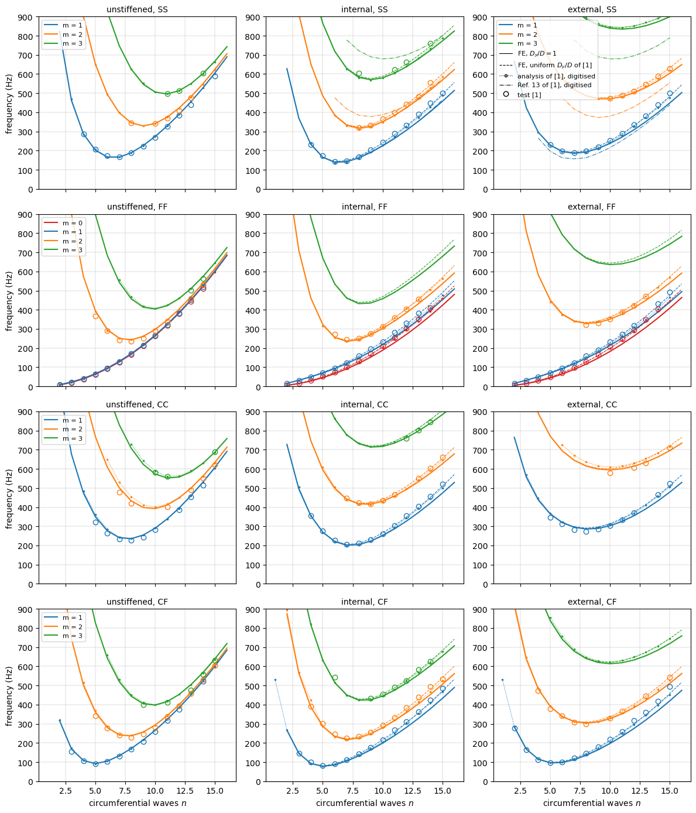
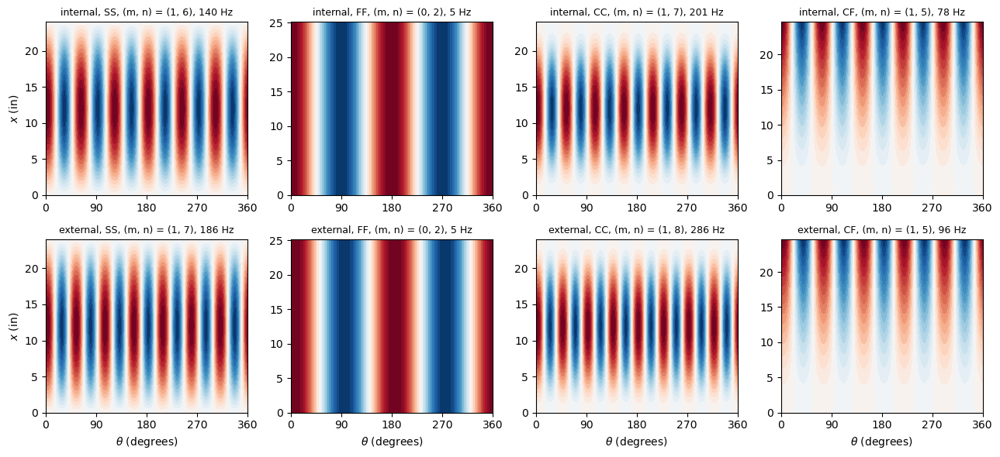
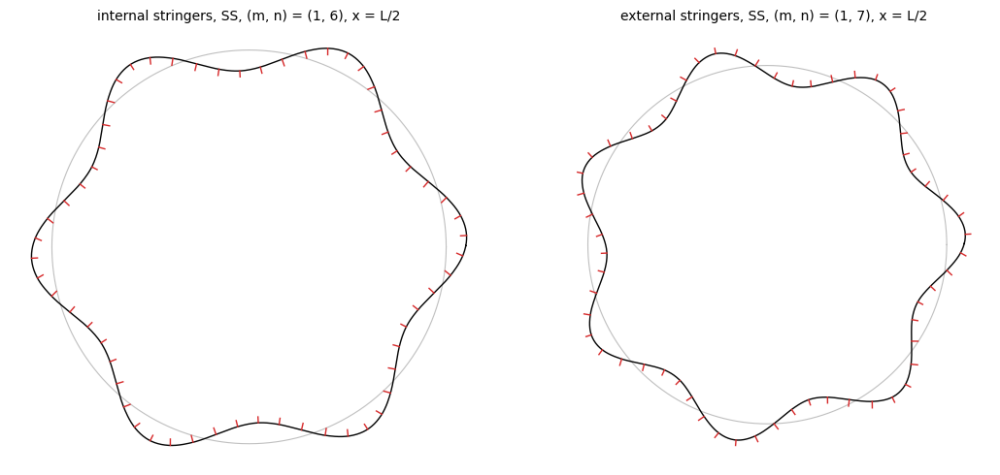

Natural frequencies of integrally stringer-stiffened cylinders: Sewall and Naumann (1968)#
Sewall and Naumann [1] measured the natural frequencies of three aluminium cylinders of nearly the same radius, skin thickness and length: an unstiffened cylinder and two cylinders machined with 60 integral rectangular (blade) stringers, outside the skin in one (externally stiffened, ES) and inside in the other (internally stiffened, IS). Each was tested with four sets of end conditions: free-free (FF), simply supported (SS), clamped-free (CF) and clamped-clamped (CC). Their analysis, a
Rayleigh-Ritz method with the stringers averaged (“smeared”) over the skin, is plotted in their Figures 8 to 11 only; the curves were digitised for this notebook (file results/sewall1968_analysis_curves.csv, reading precision stated below). The companion analysis of Egle and Sewall [2], with the stringers as discrete elements, tabulates the frequencies of the “freely supported” ES cylinder (simply supported, axial displacement free): the 60-stringer shell of [2] is the ES cylinder of [1]
(shown below).
Here the three cylinders are modelled with discrete stringers:
the skin with the BFSC cylinder element of Sanders-type kinematics,
BFSCCylinderSanders;each stringer with the BFSC plate element
BFSCPlate2Dof bfscplate2d, in the plane \((x, r)\) of the stringer, from the middle surface of the skin to the tip of the stringer, its nodes along the root tied to the skin.
The 60 stringers are identical and equally spaced, so that one stringer pitch, a sector of \(6°\), represents the cylinder for every circumferential wave number \(n\) (cyclic symmetry, explained below). The natural frequencies of the problem \((\boldsymbol{K}_{C0} - \omega^2 \boldsymbol{M})\boldsymbol{u} = \boldsymbol{0}\) are compared with every frequency of Tables II to V of [1], with the analytical curves of Figures 8 to 11 of [1] and with Table 2 of [2]. Three variants of the skin at the stringer roots are compared: the skin of uniform thickness, and the circumferential bending stiffness of Appendix A of [1], smeared over the skin or concentrated at the roots.
The model is given by the module blade_cylinder_sector.py, next to this notebook, shared with the notebook of the buckling tests of Card and Jones. Besides bfsccylinder, it needs bfscplate2d, composites, SciPy and Matplotlib.
References
[1] Sewall, J. L.; Naumann, E. C., “An experimental and analytical vibration study of thin cylindrical shells with and without longitudinal stiffeners”, NASA TN D-4705, September 1968. https://ntrs.nasa.gov/citations/19680024266
[2] Egle, D. M.; Sewall, J. L., “An analysis of free vibration of orthogonally stiffened cylindrical shells with stiffeners treated as discrete elements”, AIAA Journal 6(3), 518-526, 1968. https://doi.org/10.2514/3.4528
[1]:
%matplotlib inline
import csv
import multiprocessing
import os
import re
import time
from concurrent.futures import ProcessPoolExecutor
import numpy as np
import matplotlib.pyplot as plt
from scipy.integrate import quad
from bfsccylinder.version import __version__ as bfsccylinder_version
from bfscplate2d.version import __version__ as bfscplate2d_version
from blade_cylinder_sector import (BladeCylinderSector, frequencies,
axial_nodes_lines, normalize_phase, DOF,
V, W)
print('bfsccylinder', bfsccylinder_version)
print('bfscplate2d', bfscplate2d_version)
bfsccylinder 0.7.1
bfscplate2d 0.5.0
Geometry and material#
The values are those of Table I of [1] (report page 30), averages of up to 60 measurements, in inches, pounds-force and seconds. The stringers are spaced 1.00 in along the middle surface of the skin, 60 around the circumference, and have a fillet of radius 1/16 in on each side of the root. The cylinder length depends on the end conditions, the length between the supports (Table I). All cylinders are 6061-T6 aluminium alloy.
[2]:
# Table I of [1], report page 30; lengths in in, E in psi, rho in lbf s^2/in^4
shells = {
'unstiffened': dict(R=9.538, h=0.0255),
'internal': dict(R=9.535, h=0.0266, height=0.2754, A_s=0.029219,
z_s=-0.1438),
'external': dict(R=9.537, h=0.0256, height=0.2764, A_s=0.029319,
z_s=0.1439),
}
r_F = 1/16 # fillet radius
width = 0.100 # stringer width, 2 r_s
spacing = 1.00 # along the middle surface
lengths = {'FF': 25.125, 'CF': 24.625, 'SS': 24.00, 'CC': 24.00}
E = 1e7 # psi, shell and stringers
nu = 0.315
G_s = 3.8e6 # psi, shear modulus of the stringers
rho = 2.54e-4 # lbf s^2/in^4
nstringers = 60
inch = 25.4e-3 # m
psi = 4.4482216/inch**2 # Pa
print('E = %.2f GPa, G_s = %.2f GPa, E/(2 (1 + nu)) = %.3g psi'
% (E*psi/1e9, G_s*psi/1e9, E/(2*(1 + nu))))
print('rho = %.1f kg/m^3' % (rho*4.4482216/inch**4))
for key, g in shells.items():
print('%-11s R = %.1f mm, h = %.3f mm, 2 pi R/60 = %.3f in'
% (key, g['R']*1e3*inch, g['h']*1e3*inch,
2*np.pi*g['R']/nstringers))
E = 68.95 GPa, G_s = 26.20 GPa, E/(2 (1 + nu)) = 3.8e+06 psi
rho = 2714.5 kg/m^3
unstiffened R = 242.3 mm, h = 0.648 mm, 2 pi R/60 = 0.999 in
internal R = 242.2 mm, h = 0.676 mm, 2 pi R/60 = 0.999 in
external R = 242.2 mm, h = 0.650 mm, 2 pi R/60 = 0.999 in
Table I gives the shear modulus of the stringers \(G_s = E/[2(1 + \nu)]\) within 0.1 %, so that the stringers are isotropic, as the plate elements are. The 60 stringers fill the circumference with the spacing of 1.00 in.
Stringer model. The “stiffener height” of Table I is measured from the surface of the skin: with this datum, the rectangle \(0.100 \times\) height plus the two fillets, of area \((1 - \pi/4)r_F^2\) each, give the area \(A_s\) and the centroid distance \(\bar{z}_s\) of Table I, as checked below. The plate of a stringer goes from the middle surface of the skin to the tip, of height \(H_s = \text{height} + h/2\) and thickness \(b_s = 0.100\) in; the fillets are not modelled.
[3]:
shells['internal']['J_es'] = 0.832256e-3 # Table I of [1], in^4
shells['external']['J_es'] = 0.836124e-3
for side in ['internal', 'external']:
g = shells[side]
rect = width*g['height']
fillets = 2*(1 - np.pi/4)*r_F**2
# centroid of a fillet from the skin surface, (10 - 3 pi)/(12 - 3 pi) r_F
zf = (10 - 3*np.pi)/(12 - 3*np.pi)*r_F
zbar = (g['h']/2 + (rect*g['height']/2 + fillets*zf)/(rect + fillets))
Hs = g['height'] + g['h']/2
print('%s: rectangle + fillets: A = %.6f in^2 (A_s = %.6f), '
'z = %.4f in (|z_s| = %.4f)' % (side, rect + fillets, g['A_s'],
zbar, abs(g['z_s'])))
print(' plate of the model: H_s = %.4f in, b_s H_s = %.5f in^2 '
'(%+.1f %% of A_s), centroid H_s/2 = %.4f in'
% (Hs, width*Hs, 100*(width*Hs/g['A_s'] - 1), Hs/2))
# polar moment of inertia about the middle surface of the skin
J = width*Hs**3/3 + Hs*width**3/12
print(' polar moment about the skin middle surface: plate %.4e in^4, '
'J_es of Table I %.4e in^4 (%+.1f %%)'
% (J, g['J_es'], 100*(J/g['J_es'] - 1)))
internal: rectangle + fillets: A = 0.029217 in^2 (A_s = 0.029219), z = 0.1439 in (|z_s| = 0.1438)
plate of the model: H_s = 0.2887 in, b_s H_s = 0.02887 in^2 (-1.2 % of A_s), centroid H_s/2 = 0.1443 in
polar moment about the skin middle surface: plate 8.2614e-04 in^4, J_es of Table I 8.3226e-04 in^4 (-0.7 %)
external: rectangle + fillets: A = 0.029317 in^2 (A_s = 0.029319), z = 0.1439 in (|z_s| = 0.1439)
plate of the model: H_s = 0.2892 in, b_s H_s = 0.02892 in^2 (-1.4 % of A_s), centroid H_s/2 = 0.1446 in
polar moment about the skin middle surface: plate 8.3036e-04 in^4, J_es of Table I 8.3612e-04 in^4 (-0.7 %)
The polar moments \(J_{e_s}\) of Table I are 0.832256e-3 in\(^4\) (IS) and 0.836124e-3 in\(^4\) (ES). The plate of the model omits the fillets and overlaps the skin over \(h/2\); its area, centroid and polar moment are within 1.5 % of Table I.
The 60-stringer shell of Egle and Sewall#
Table 1 of [2] (page 522) lists the properties of its 60-stringer shell, “taken from Ref. 14”, the proposed report that became [1]. They are those of the ES cylinder in Table I of [1] with the SS length:
[4]:
# Table 1 of [2], page 522, "60 stringer case"
egle_t1 = dict(R=9.537, a=24.00, h=2.56e-2, E=10.0e6, rho=2.54e-4,
nu=0.315, A_s=2.932e-2, z_s=0.1439, GJ=269.8, Dy=1.197)
es = shells['external']
tn = dict(R=es['R'], a=lengths['SS'], h=es['h'], E=E, rho=rho, nu=nu,
A_s=es['A_s'], z_s=es['z_s'], GJ=G_s, Dy=1.197)
# Table I of [1] gives G_s, not GJ: J of the 0.100 x height rectangle
# (Saint-Venant, approximation of Roark: a b^3 [1/3 - 0.21 (b/a)
# (1 - b^4/(12 a^4))], a = height, b = width)
a_, b_ = es['height'], width
J_rect = a_*b_**3*(1/3 - 0.21*b_/a_*(1 - b_**4/(12*a_**4)))
tn['GJ'] = G_s*J_rect
labels = dict(R='R (in)', a='a = L, SS (in)', h='h (in)', E='E (psi)',
rho='rho (lbf s^2/in^4)', nu='nu', A_s='A_s (in^2)',
z_s='z_s (in)', GJ='(GJ)_s (lbf in^2)', Dy='D_y/D')
print('%-20s %12s %14s diff' % ('', 'Table 1 [2]', 'Table I [1]'))
for key in labels:
print('%-20s %12.5g %14.5g %+5.2f %%'
% (labels[key], egle_t1[key], tn[key],
100*(egle_t1[key]/tn[key] - 1)))
Hs_es = es['height'] + es['h']/2
GJ_plate = (E/(2*(1 + nu)))*width**3*Hs_es/3
print('torsion of the plate stringer of the model, G b_s^3 H_s/3 = %.1f '
'lbf in^2' % GJ_plate)
Table 1 [2] Table I [1] diff
R (in) 9.537 9.537 +0.00 %
a = L, SS (in) 24 24 +0.00 %
h (in) 0.0256 0.0256 +0.00 %
E (psi) 1e+07 1e+07 +0.00 %
rho (lbf s^2/in^4) 0.000254 0.000254 +0.00 %
nu 0.315 0.315 +0.00 %
A_s (in^2) 0.02932 0.029319 +0.00 %
z_s (in) 0.1439 0.1439 +0.00 %
(GJ)_s (lbf in^2) 269.8 270.42 -0.23 %
D_y/D 1.197 1.197 +0.00 %
torsion of the plate stringer of the model, G b_s^3 H_s/3 = 366.5 lbf in^2
(The value for \(D_y/D\) of [1] is that of its Appendix A, report page 25; the \((GJ)_s\) of Table I of [1] is computed from \(G_s\) and the rectangle without fillets.) Table 1 of [2] rounds \(A_s\) to 0.02932 in\(^2\); the rest is the same, so the ES cylinder of this notebook is the 60-stringer shell of [2]. The plate stringer of the model has the Kirchhoff torsional stiffness \(G b_s^3 H_s/3\), 36 % above the Saint-Venant value of a rectangle of this aspect ratio (height/width about 2.9), which [2] uses.
Measured frequencies#
Tables II to V of [1] (report pages 31 and 32) give the resonant frequencies in Hz for \(m\) axial and \(n\) circumferential wave numbers. The circumferential wave number \(n\) is the number of full waves around the circumference. The axial wave number \(m\) is defined in Figure 4 of [1] (report page 37) by the radial mode shape along the length: for SS and CC ends, \(m\) half-waves (\(m - 1\) nodal circles between the ends); for CF ends, \(m - 1\) nodal circles between the clamped and the free end; for FF ends, \(m\) nodal circles (\(m = 0\), uniform along the length; \(m = 1\), linear, one nodal circle; \(m = 2\), two nodal circles).
Two values of the same \((m, n)\) in a table are “dual resonances”, two frequencies of two mode orientations a quarter wavelength apart, found for many modes [1]. Table III (FF) gives two values for every \(m = 0\) and \(m = 1\) mode: the first measured with the electrodynamic shaker, the second with an air shaker, used for small \(m\) and \(n\), whose frequencies [1] (report page 10) considers “more nearly correct over the range of \(n\) values covered”; the values with \(m \ge 2\) are single values, from the electrodynamic shaker.
[5]:
# test[bc][shell][(m, n)] = list of frequencies in Hz
test = {bc: {} for bc in ['SS', 'FF', 'CC', 'CF']}
# Table II, simply supported, report page 31
test['SS']['unstiffened'] = {
(1, 4): [287.0], (1, 5): [203.0, 211.0], (1, 6): [175.0],
(1, 7): [163.0, 169.0], (1, 8): [188.0], (1, 9): [224.0],
(1, 10): [268.0], (1, 11): [326.0], (1, 12): [382.0, 385.0],
(1, 13): [440.0], (1, 15): [590.0],
(2, 8): [345.0, 346.0], (2, 10): [339.0, 342.0], (2, 11): [369.0, 370.0],
(2, 12): [409.0, 411.0], (2, 13): [471.0, 479.0],
(3, 11): [491.0, 507.0], (3, 12): [510.0, 517.0], (3, 14): [604.0],
}
test['SS']['internal'] = {
(1, 4): [233.0], (1, 5): [175.0], (1, 6): [137.0, 147.0],
(1, 7): [142.0, 150.0], (1, 8): [169.0], (1, 9): [203.0],
(1, 10): [243.0], (1, 11): [290.0], (1, 12): [333.0], (1, 13): [392.0],
(1, 14): [450.0], (1, 15): [502.0],
(2, 8): [319.0], (2, 9): [333.0], (2, 10): [366.0], (2, 11): [399.0],
(2, 12): [443.0], (2, 13): [482.0], (2, 14): [551.0, 560.0],
(3, 8): [602.0, 605.0], (3, 11): [622.0], (3, 12): [664.0],
(3, 14): [761.0],
}
test['SS']['external'] = {
(1, 5): [231.0], (1, 6): [197.0, 201.0], (1, 7): [189.0],
(1, 8): [199.0], (1, 9): [219.0], (1, 10): [252.0], (1, 11): [290.0],
(1, 12): [336.0], (1, 13): [378.0, 386.0], (1, 14): [440.0],
(1, 15): [500.0],
(2, 10): [469.0, 478.0], (2, 11): [489.0], (2, 12): [507.0, 512.0],
(2, 13): [546.0], (2, 14): [590.0], (2, 15): [630.0],
}
# Table III, free-free, report page 31: m = 0 and 1 as
# (electrodynamic shaker, air shaker); m >= 2 electrodynamic shaker only
test['FF']['unstiffened'] = {
(0, 2): (11.8, 7.2), (0, 3): (24.5, 20.1), (0, 4): (40.1, 37.9),
(0, 5): (63.4, 61.9), (0, 6): (91.7, 91.6), (0, 7): (125.6, 125.0),
(0, 8): (165.0, 165.0), (0, 9): (210.0, 210.0), (0, 10): (262.0, 262.0),
(0, 11): (318.0, 318.0), (0, 12): (378.0, 378.0),
(0, 13): (443.0, 443.0), (0, 14): (512.0, 512.0),
(1, 2): (14.8, 9.2), (1, 3): (26.8, 22.3), (1, 4): (44.6, 40.3),
(1, 5): (66.8, 65.0), (1, 6): (94.8, 94.6), (1, 7): (129.0, 129.0),
(1, 8): (170.0, 170.0), (1, 9): (214.0, 214.0), (1, 10): (266.0, 266.0),
(1, 11): (322.0, 322.0), (1, 12): (382.0, 382.0),
(1, 13): (452.0, 452.0), (1, 14): (521.0, 521.0),
(2, 5): (367.0,), (2, 6): (292.0,), (2, 7): (242.0,), (2, 8): (235.0,),
(2, 9): (252.0,), (2, 10): (290.0,), (2, 11): (339.0,),
(2, 13): (459.0,), (2, 14): (533.0,),
(3, 13): (501.0,), (3, 14): (564.0,),
}
test['FF']['internal'] = {
(0, 2): (5.0, 6.1), (0, 3): (18.0, 16.1), (0, 4): (32.0, 30.4),
(0, 5): (51.3, 51.1), (0, 6): (74.0, 74.0), (0, 7): (102.0, 102.0),
(0, 8): (132.0, 132.0), (0, 9): (170.0, 170.0), (0, 10): (210.0, 210.0),
(0, 11): (255.0, 255.0), (0, 12): (302.0, 302.0),
(0, 13): (351.0, 351.0), (0, 14): (410.0, 410.0),
(1, 2): (21.0, 15.8), (1, 3): (35.0, 31.4), (1, 4): (52.0, 50.4),
(1, 5): (71.0, 70.3), (1, 6): (96.0, 95.8), (1, 7): (124.0, 124.0),
(1, 8): (158.0, 158.0), (1, 9): (195.0, 195.0), (1, 10): (234.0, 234.0),
(1, 11): (280.0, 280.0), (1, 12): (330.0, 330.0),
(1, 13): (382.0, 382.0),
(2, 6): (273.0,), (2, 7): (245.0,), (2, 8): (252.0,), (2, 9): (276.0,),
(2, 10): (312.0,), (2, 11): (358.0,), (2, 12): (405.0,),
(2, 13): (455.0,),
}
test['FF']['external'] = {
(0, 2): (4.8, 5.9), (0, 3): (17.5, 15.7), (0, 4): (30.8, 30.6),
(0, 5): (50.0, 50.1), (0, 6): (71.0, 71.0), (0, 7): (98.0, 98.0),
(0, 8): (129.0, 129.0), (0, 9): (165.0, 165.0), (0, 10): (208.0, 208.0),
(0, 11): (249.0, 249.0), (0, 12): (295.0, 295.0),
(0, 13): (348.0, 348.0), (0, 14): (403.0, 403.0),
(1, 2): (20.5, 15.2), (1, 3): (34.5, 31.1), (1, 4): (52.5, 49.4),
(1, 5): (72.0, 69.7), (1, 6): (94.0, 94.0), (1, 7): (122.0, 122.0),
(1, 8): (159.0, 159.0), (1, 9): (189.0, 189.0), (1, 10): (232.0, 232.0),
(1, 11): (273.0, 273.0), (1, 12): (318.0, 318.0),
(1, 14): (430.0, 430.0), (1, 15): (493.0, 493.0),
(2, 8): (320.0,), (2, 9): (330.0,), (2, 10): (352.0,), (2, 11): (388.0,),
(2, 12): (422.0,), (2, 13): (470.0,),
}
# Table IV, clamped-clamped, report page 32
test['CC']['unstiffened'] = {
(1, 5): [321.0, 325.0], (1, 6): [263.0], (1, 7): [233.0],
(1, 8): [227.0], (1, 9): [244.0], (1, 10): [281.0], (1, 12): [386.0],
(1, 13): [453.0], (1, 14): [515.0],
(2, 7): [479.0], (2, 8): [418.0, 423.0], (2, 11): [397.0, 404.0],
(2, 13): [490.0], (2, 14): [552.0], (2, 15): [622.0],
(3, 10): [583.0], (3, 11): [562.0], (3, 15): [690.0],
}
test['CC']['internal'] = {
(1, 4): [356.0], (1, 5): [275.0], (1, 6): [228.0], (1, 7): [207.0],
(1, 8): [212.0], (1, 9): [231.0], (1, 10): [262.0],
(1, 11): [302.0, 308.0], (1, 12): [356.0], (1, 13): [405.0],
(1, 14): [457.0], (1, 15): [522.0],
(2, 7): [449.0], (2, 8): [423.0], (2, 9): [418.0], (2, 10): [435.0],
(2, 11): [467.0], (2, 13): [551.0], (2, 14): [603.0], (2, 15): [660.0],
(3, 12): [757.0, 763.0], (3, 13): [803.0], (3, 14): [846.0],
}
test['CC']['external'] = {
(1, 5): [347.0], (1, 6): [313.0], (1, 7): [282.0], (1, 8): [272.0],
(1, 9): [287.0], (1, 10): [305.0], (1, 11): [333.0], (1, 12): [370.0],
(1, 14): [466.0], (1, 15): [525.0],
(2, 10): [578.0], (2, 12): [605.0], (2, 13): [630.0], (2, 15): [711.0],
}
# Table V, clamped-free, report page 32
test['CF']['unstiffened'] = {
(1, 3): [155.0, 157.0], (1, 4): [107.0], (1, 5): [89.0, 91.0],
(1, 6): [102.0], (1, 7): [130.0], (1, 8): [166.0], (1, 9): [208.0],
(1, 10): [260.0], (1, 11): [317.0], (1, 12): [374.0], (1, 14): [523.0],
(2, 5): [341.0], (2, 6): [276.0], (2, 7): [240.0], (2, 8): [227.0, 231.0],
(2, 9): [246.0], (2, 10): [281.0], (2, 11): [337.0],
(2, 12): [393.0, 396.0], (2, 13): [455.0, 461.0], (2, 14): [531.0],
(2, 15): [603.0],
(3, 9): [400.0], (3, 11): [409.0, 412.0], (3, 13): [476.0],
(3, 14): [558.0], (3, 15): [633.0],
}
test['CF']['internal'] = {
(1, 3): [147.0], (1, 4): [99.0], (1, 5): [80.0, 83.0],
(1, 6): [90.0, 93.0], (1, 7): [113.0], (1, 8): [143.0], (1, 9): [177.0],
(1, 10): [217.0], (1, 11): [267.0], (1, 12): [312.0], (1, 13): [363.0],
(1, 14): [425.0], (1, 15): [486.0],
(2, 4): [390.0], (2, 5): [303.0], (2, 6): [247.0], (2, 7): [225.0],
(2, 8): [233.0], (2, 9): [257.0], (2, 10): [290.0, 295.0],
(2, 11): [331.0], (2, 12): [384.0], (2, 13): [438.0], (2, 14): [494.0],
(2, 15): [535.0],
(3, 6): [544.0], (3, 9): [434.0], (3, 10): [456.0], (3, 11): [491.0],
(3, 12): [524.0], (3, 13): [584.0], (3, 14): [627.0],
}
test['CF']['external'] = {
(1, 2): [277.0], (1, 3): [161.0, 166.0], (1, 4): [110.0, 114.0],
(1, 5): [94.0, 97.0], (1, 6): [100.0], (1, 7): [121.0], (1, 8): [147.0],
(1, 9): [181.0], (1, 10): [217.0, 222.0], (1, 11): [259.0],
(1, 12): [316.0], (1, 13): [360.0], (1, 14): [418.0], (1, 15): [495.0],
(2, 4): [473.0], (2, 5): [377.0], (2, 6): [340.0], (2, 7): [308.0, 310.0],
(2, 8): [298.0, 301.0], (2, 10): [328.0, 330.0], (2, 11): [365.0],
(2, 13): [444.0], (2, 15): [544.0],
}
def reference(bc, m, values):
# value compared: the air-shaker value for FF, m = 0 and 1 ([1], report
# page 10), otherwise the mean of a dual resonance
if bc == 'FF':
return values[1] if len(values) == 2 else values[0]
return np.mean(values)
print('number of measured (m, n):')
for bc in test:
print(' %s: ' % bc + ', '.join('%s %d' % (s, len(test[bc][s]))
for s in test[bc]))
number of measured (m, n):
SS: unstiffened 19, internal 23, external 17
FF: unstiffened 37, internal 33, external 32
CC: unstiffened 18, internal 23, external 14
CF: unstiffened 27, internal 32, external 23
Model: one stringer pitch with cyclic symmetry#
The cylinder is invariant under a rotation by \(\phi = 2\pi/60\) about its axis. The model is the sector \(0 \le \theta \le \phi\), with the stringer at its middle, \(\theta = \phi/2\); its skin has nbay elements across the sector and nx nodes along \(x\), its stringer nh elements along the height. The degrees of freedom of the BFSC elements are in the axial, circumferential and radial directions, which rotate with the sector, so that a mode of the whole cylinder with
\(n\) circumferential waves has, in the sector \(k\), the degrees of freedom of the sector \(0\) multiplied by \(e^{i n k
\phi}\). The nodes of the edge \(\theta = \phi\) are eliminated with \(\boldsymbol{u}(\phi) = e^{i n \phi}\boldsymbol{u}(0)\), and one complex Hermitian eigenvalue problem per harmonic \(n = 0, 1, \ldots, 30\) gives all the modes of the cylinder. A harmonic \(n\) contains the circumferential waves \(n \pm 60 j\), which the discrete stringers couple, as Egle and Sewall [2] show for discrete stringers; with 60 stringers the coupling of a mode with \(n \le 15\) to the waves
\(60 - n\) and beyond is weak [2], but it is in the model. The modes of \(n\) and \(-n\) are the pair in \(\cos n\theta\) and \(\sin
n\theta\) of the same frequency: the discrete model with identical stringers has no dual resonances for \(n < 30\). In the tests, [1] (report page 11) does not know whether the preferred orientations of the dual resonances “are due to construction defects or to rotational and translational energies of the stiffeners”; departures from the ideal geometry, such as the two longitudinal seams \(180°\) apart (report page 6), would split the pair.
The stringer root is tied to the skin along \(\theta = \phi/2\): the axial, radial and circumferential displacements and the rotation about \(x\) of the stringer are those of the skin, \(U = u\), \(V = w\), \(W = v\), \(W_{,Y} =
-w_{,y} + v/R\), with the rotation of the Sanders-type kinematics, and the derivatives of these relations along \(x\); see the docstring of blade_cylinder_sector.py.
The end conditions of the tests [1] (report pages 6 to 8) and their model:
tests |
model at the end |
|---|---|
free-free: suspended by soft rubber bands |
none |
simply supported: rings with sharp tips inside and outside the skin at each end, which restrain the normal displacement and let the cylinder move axially; for the stiffened cylinders, clips at three locations between stringers against the rotation of the cylinder; “motion normal to the shell between stiffeners was not restrained on the stiffened side of the shell” (report page 7) |
\(v = w = 0\); \(u\), \(w_{,x}\) free; \(V = W = 0\) along the end edge of the stringer |
clamped: the end potted 1/2 in deep in a groove of an end plate |
\(u = v = w = w_{,x} = 0\) and the end edge of the stringer clamped |
The derivatives along an end edge of its constrained displacements are constrained as well. With SS ends and \(n = 0\), the mean of \(u\) along the edge \(x = 0\) is tied to zero, which removes the axial rigid-body motion. With FF ends, the six rigid-body motions of the cylinder appear as zero frequencies at \(n = 0\) and \(n = 1\); the tests start at \(n = 2\).
Each mode is identified by its harmonic \(n\) and by the number of sign changes along \(x\) of the normal displacement \(w\) of the skin (each line of nodes along \(x\) taken with its own complex phase), counted as in Figure 4 of [1]: \(m\) = sign changes + 1 for SS, CC and CF ends, \(m\) = sign changes for FF ends. A mode is kept when all the lines of nodes with at least half the largest mean square of \(w\) have the same number of sign changes, and for each \((m, n)\) the lowest frequency is kept; modes without a single axial wave number (in-surface modes with small \(w\), mixed local modes) are not classified.
The computations below are many independent eigenvalue analyses (one per cylinder, end conditions, mesh and variant); pmap runs them in parallel processes where the operating system can fork them (the number of processes is the environment variable NPROC, by default the number of processors), otherwise one after another.
[6]:
def build(shell, bc, nx, nbay, nh, **options):
# options: h (skin thickness, default Table I) and the keyword arguments
# Dy_factor and skin_inplane_inertia of BladeCylinderSector
g = shells[shell]
h = options.pop('h', g['h'])
blade = {}
if shell != 'unstiffened':
blade = dict(bs=width, Hs=g['height'] + h/2, side=shell, nh=nh)
return BladeCylinderSector(R=g['R'], L=lengths[bc], h=h, E=E, nu=nu,
rho=rho, nstringers=nstringers, nx=nx,
nbay=nbay, **blade, **options)
def spectrum(task):
# lowest frequency (and, with keep_modes, the mode) of each (m, n);
# task = (shell, bc, mesh, options), options of build() and ns, k,
# keep_modes; returns the number of complex degrees of freedom of the
# sector, the frequencies and the modes
shell, bc, mesh, options = task
options = dict(options)
ns = options.pop('ns', range(2, 17))
k = options.pop('k', 10)
keep_modes = options.pop('keep_modes', False)
model = build(shell, bc, *mesh, **options)
freq, modes = {}, {}
for n in ns:
f, X = frequencies(model, bc, n, k=k)
for i, fi in enumerate(f):
if fi < 1.: # rigid-body motions, FF
continue
counts, msq = axial_nodes_lines(model, X[:, i])
counts = counts[msq >= 0.5*msq.max()]
if np.any(counts != counts[0]): # no single axial wave number
continue
m = int(counts[0]) + (0 if bc == 'FF' else 1)
if (m, n) not in freq:
freq[(m, n)] = fi
if keep_modes:
modes[(m, n)] = X[:, i]
return model.Nr, freq, modes
def pmap(func, tasks):
tasks = list(tasks)
if 'fork' in multiprocessing.get_all_start_methods():
nproc = int(os.environ.get('NPROC', os.cpu_count()))
with ProcessPoolExecutor(nproc, mp_context=multiprocessing.get_context(
'fork')) as ex:
return list(ex.map(func, tasks))
return [func(t) for t in tasks]
Mesh convergence#
The three cylinders and the four end conditions with a sequence of meshes (nx, nbay, nh). For each case the table gives the number of complex degrees of freedom of the sector, the frequency of the lowest measured mode of Tables II to V, and the largest change, over all the measured \((m, n)\) of the case, from the previous mesh. The FF modes with \(m = 1\) and small \(n\), in which the cylinder twists between its free ends, converge slowly along \(x\) and need a finer mesh
along \(x\) than the other end conditions.
[7]:
coarse = [(13, 2, 2), (25, 4, 3), (49, 8, 6), (97, 12, 8)]
meshes = {'SS': coarse, 'CC': coarse, 'CF': coarse,
'FF': [(49, 8, 6), (97, 8, 6), (145, 8, 6), (193, 8, 6), (241, 8, 6)]}
final = {bc: meshes[bc][-1] for bc in meshes}
tasks = [(shell, bc, mesh, dict(keep_modes=(mesh == final[bc])))
for shell in ['unstiffened', 'internal', 'external']
for bc in ['SS', 'FF', 'CC', 'CF'] for mesh in meshes[bc]]
t0 = time.time()
conv = {t[:3]: r for t, r in zip(tasks, pmap(spectrum, tasks))}
print('%.0f s' % (time.time() - t0))
print('cylinder ends mesh dofs lowest tested mode '
'largest change of the tested modes')
for shell in ['unstiffened', 'internal', 'external']:
for bc in ['SS', 'FF', 'CC', 'CF']:
keys = list(test[bc][shell])
mn0 = min(keys, key=lambda mn: reference(bc, mn[0],
test[bc][shell][mn]))
prev = None
for mesh in meshes[bc]:
Nr, freq, _ = conv[(shell, bc, mesh)]
f = np.array([freq.get(mn, np.nan) for mn in keys])
change = ''
if prev is not None:
d = np.abs(f/prev - 1)
i = np.nanargmax(d)
change = '%5.2f %% at (%d, %2d)' % (100*d[i], *keys[i])
print('%-11s %-5s %-13s %5d (%d, %2d) %7.1f Hz %s'
% (shell, bc, mesh, Nr, *mn0, freq.get(mn0, np.nan),
change))
prev = f
715 s
cylinder ends mesh dofs lowest tested mode largest change of the tested modes
unstiffened SS (13, 2, 2) 260 (1, 7) 168.7 Hz
unstiffened SS (25, 4, 3) 1000 (1, 7) 166.8 Hz 1.74 % at (3, 11)
unstiffened SS (49, 8, 6) 3920 (1, 7) 166.3 Hz 0.33 % at (3, 11)
unstiffened SS (97, 12, 8) 11640 (1, 7) 166.2 Hz 0.08 % at (3, 11)
unstiffened FF (49, 8, 6) 3920 (0, 2) 7.2 Hz
unstiffened FF (97, 8, 6) 7760 (0, 2) 7.2 Hz 14.68 % at (1, 2)
unstiffened FF (145, 8, 6) 11600 (0, 2) 7.2 Hz 3.54 % at (1, 2)
unstiffened FF (193, 8, 6) 15440 (0, 2) 7.2 Hz 1.32 % at (1, 2)
unstiffened FF (241, 8, 6) 19280 (0, 2) 7.2 Hz 0.63 % at (1, 2)
unstiffened CC (13, 2, 2) 260 (1, 8) 238.5 Hz
unstiffened CC (25, 4, 3) 1000 (1, 8) 236.2 Hz 1.97 % at (3, 11)
unstiffened CC (49, 8, 6) 3920 (1, 8) 235.7 Hz 0.35 % at (3, 11)
unstiffened CC (97, 12, 8) 11640 (1, 8) 235.6 Hz 0.07 % at (3, 11)
unstiffened CF (13, 2, 2) 260 (1, 5) 94.2 Hz
unstiffened CF (25, 4, 3) 1000 (1, 5) 92.7 Hz 1.83 % at (3, 9)
unstiffened CF (49, 8, 6) 3920 (1, 5) 92.3 Hz 0.43 % at (2, 8)
unstiffened CF (97, 12, 8) 11640 (1, 5) 92.3 Hz 0.10 % at (2, 8)
internal SS (13, 2, 2) 546 (1, 6) 141.8 Hz
internal SS (25, 4, 3) 1800 (1, 6) 140.2 Hz 2.96 % at (3, 8)
internal SS (49, 8, 6) 6958 (1, 6) 139.8 Hz 0.61 % at (3, 8)
internal SS (97, 12, 8) 19594 (1, 6) 139.7 Hz 0.15 % at (3, 8)
internal FF (49, 8, 6) 6958 (0, 2) 5.2 Hz
internal FF (97, 8, 6) 13774 (0, 2) 5.2 Hz 3.02 % at (1, 2)
internal FF (145, 8, 6) 20590 (0, 2) 5.2 Hz 0.59 % at (1, 2)
internal FF (193, 8, 6) 27406 (0, 2) 5.2 Hz 0.21 % at (1, 2)
internal FF (241, 8, 6) 34222 (0, 2) 5.2 Hz 0.10 % at (1, 2)
internal CC (13, 2, 2) 546 (1, 7) 206.5 Hz
internal CC (25, 4, 3) 1800 (1, 7) 202.5 Hz 4.43 % at (3, 12)
internal CC (49, 8, 6) 6958 (1, 7) 201.7 Hz 0.84 % at (3, 12)
internal CC (97, 12, 8) 19594 (1, 7) 201.5 Hz 0.20 % at (3, 12)
internal CF (13, 2, 2) 546 (1, 5) 78.9 Hz
internal CF (25, 4, 3) 1800 (1, 5) 77.9 Hz 2.93 % at (3, 9)
internal CF (49, 8, 6) 6958 (1, 5) 77.7 Hz 0.64 % at (3, 9)
internal CF (97, 12, 8) 19594 (1, 5) 77.7 Hz 0.16 % at (3, 9)
external SS (13, 2, 2) 546 (1, 7) 187.9 Hz
external SS (25, 4, 3) 1800 (1, 7) 186.6 Hz 1.00 % at (2, 10)
external SS (49, 8, 6) 6958 (1, 7) 186.3 Hz 0.24 % at (2, 10)
external SS (97, 12, 8) 19594 (1, 7) 186.2 Hz 0.06 % at (2, 10)
external FF (49, 8, 6) 6958 (0, 2) 5.0 Hz
external FF (97, 8, 6) 13774 (0, 2) 5.0 Hz 2.98 % at (1, 2)
external FF (145, 8, 6) 20590 (0, 2) 5.0 Hz 0.58 % at (1, 2)
external FF (193, 8, 6) 27406 (0, 2) 5.0 Hz 0.21 % at (1, 2)
external FF (241, 8, 6) 34222 (0, 2) 5.0 Hz 0.10 % at (1, 2)
external CC (13, 2, 2) 546 (1, 8) 291.0 Hz
external CC (25, 4, 3) 1800 (1, 8) 287.3 Hz 2.14 % at (2, 10)
external CC (49, 8, 6) 6958 (1, 8) 286.3 Hz 0.51 % at (2, 10)
external CC (97, 12, 8) 19594 (1, 8) 286.1 Hz 0.14 % at (2, 10)
external CF (13, 2, 2) 546 (1, 5) 97.3 Hz
external CF (25, 4, 3) 1800 (1, 5) 96.5 Hz 1.20 % at (2, 8)
external CF (49, 8, 6) 6958 (1, 5) 96.3 Hz 0.31 % at (2, 8)
external CF (97, 12, 8) 19594 (1, 5) 96.2 Hz 0.09 % at (2, 8)
The finest mesh of each end condition is used below: from the previous mesh, the measured modes change by less than 1 % (the last line of each case in the table).
Comparison with the tests#
All three cylinders and the four end conditions with the finest mesh:
[8]:
results = {(shell, bc): conv[(shell, bc, final[bc])]
for shell in ['unstiffened', 'internal', 'external']
for bc in ['SS', 'FF', 'CC', 'CF']}
summary = {}
for bc, table in [('SS', 'II'), ('FF', 'III'), ('CC', 'IV'), ('CF', 'V')]:
print('\nEnd conditions %s, Table %s of [1]' % (bc, table))
print(' m n | %-26s | %-26s | %-26s' % ('unstiffened', 'internal',
'external'))
print(' | ' + ' | '.join([' test (Hz) FE (Hz) diff'] * 3))
keys = sorted(set().union(*[test[bc][s] for s in test[bc]]))
for m, n in keys:
row = []
for shell in ['unstiffened', 'internal', 'external']:
values = test[bc][shell].get((m, n))
if values is None:
row.append(' '*26)
continue
ref = reference(bc, m, values)
fe = results[(shell, bc)][1].get((m, n), np.nan)
row.append('%11.1f %8.1f %+5.1f%%' % (ref, fe,
100*(fe/ref - 1)))
summary.setdefault((shell, bc), []).append(fe/ref - 1)
print('%2d %3d | ' % (m, n) + ' | '.join(row))
End conditions SS, Table II of [1]
m n | unstiffened | internal | external
| test (Hz) FE (Hz) diff | test (Hz) FE (Hz) diff | test (Hz) FE (Hz) diff
1 4 | 287.0 287.6 +0.2% | 233.0 233.2 +0.1% |
1 5 | 207.0 201.8 -2.5% | 175.0 165.2 -5.6% | 231.0 228.5 -1.1%
1 6 | 175.0 166.6 -4.8% | 142.0 139.7 -1.6% | 199.0 195.8 -1.6%
1 7 | 166.0 166.2 +0.1% | 146.0 142.4 -2.4% | 189.0 186.2 -1.5%
1 8 | 188.0 189.3 +0.7% | 169.0 161.8 -4.3% | 199.0 192.9 -3.1%
1 9 | 224.0 226.8 +1.3% | 203.0 190.4 -6.2% | 219.0 211.1 -3.6%
1 10 | 268.0 274.0 +2.3% | 243.0 224.9 -7.4% | 252.0 237.7 -5.7%
1 11 | 326.0 328.6 +0.8% | 290.0 264.0 -9.0% | 290.0 270.7 -6.6%
1 12 | 383.5 389.4 +1.5% | 333.0 307.0 -7.8% | 336.0 309.0 -8.0%
1 13 | 440.0 456.1 +3.7% | 392.0 353.6 -9.8% | 382.0 351.7 -7.9%
1 14 | | 450.0 403.8 -10.3% | 440.0 398.5 -9.4%
1 15 | 590.0 606.3 +2.8% | 502.0 457.5 -8.9% | 500.0 449.0 -10.2%
2 8 | 345.5 345.1 -0.1% | 319.0 317.6 -0.4% |
2 9 | | 333.0 326.5 -1.9% |
2 10 | 340.5 341.7 +0.3% | 366.0 350.6 -4.2% | 473.5 470.7 -0.6%
2 11 | 369.5 374.9 +1.5% | 399.0 384.1 -3.7% | 489.0 481.7 -1.5%
2 12 | 410.0 423.0 +3.2% | 443.0 423.8 -4.3% | 509.5 501.8 -1.5%
2 13 | 475.0 482.1 +1.5% | 482.0 468.3 -2.9% | 546.0 529.6 -3.0%
2 14 | | 555.5 516.6 -7.0% | 590.0 564.0 -4.4%
2 15 | | | 630.0 604.0 -4.1%
3 8 | | 603.5 583.6 -3.3% |
3 11 | 499.0 496.2 -0.6% | 622.0 604.6 -2.8% |
3 12 | 513.5 512.9 -0.1% | 664.0 638.5 -3.8% |
3 14 | 604.0 602.9 -0.2% | 761.0 724.0 -4.9% |
End conditions FF, Table III of [1]
m n | unstiffened | internal | external
| test (Hz) FE (Hz) diff | test (Hz) FE (Hz) diff | test (Hz) FE (Hz) diff
0 2 | 7.2 7.2 +0.2% | 6.1 5.2 -14.9% | 5.9 5.0 -15.4%
0 3 | 20.1 20.4 +1.5% | 16.1 14.7 -9.0% | 15.7 14.1 -10.0%
0 4 | 37.9 39.1 +3.2% | 30.4 28.1 -7.7% | 30.6 27.1 -11.5%
0 5 | 61.9 63.3 +2.2% | 51.1 45.3 -11.3% | 50.1 43.8 -12.6%
0 6 | 91.6 92.8 +1.3% | 74.0 66.4 -10.2% | 71.0 64.2 -9.6%
0 7 | 125.0 127.7 +2.2% | 102.0 91.3 -10.5% | 98.0 88.3 -9.9%
0 8 | 165.0 168.0 +1.8% | 132.0 120.0 -9.1% | 129.0 116.0 -10.1%
0 9 | 210.0 213.7 +1.8% | 170.0 152.4 -10.4% | 165.0 147.3 -10.7%
0 10 | 262.0 264.7 +1.0% | 210.0 188.5 -10.2% | 208.0 182.2 -12.4%
0 11 | 318.0 321.1 +1.0% | 255.0 228.3 -10.5% | 249.0 220.6 -11.4%
0 12 | 378.0 382.9 +1.3% | 302.0 271.7 -10.0% | 295.0 262.5 -11.0%
0 13 | 443.0 450.0 +1.6% | 351.0 318.6 -9.2% | 348.0 307.9 -11.5%
0 14 | 512.0 522.5 +2.0% | 410.0 369.1 -10.0% | 403.0 356.6 -11.5%
1 2 | 9.2 8.9 -3.5% | 15.8 15.6 -1.1% | 15.2 15.6 +2.8%
1 3 | 22.3 22.7 +2.0% | 31.4 32.1 +2.3% | 31.1 32.2 +3.5%
1 4 | 40.3 41.7 +3.6% | 50.4 49.9 -0.9% | 49.4 49.9 +0.9%
1 5 | 65.0 66.0 +1.5% | 70.3 70.0 -0.4% | 69.7 69.7 -0.0%
1 6 | 94.6 95.6 +1.0% | 95.8 93.0 -3.0% | 94.0 92.2 -1.9%
1 7 | 129.0 130.5 +1.1% | 124.0 119.0 -4.0% | 122.0 117.7 -3.5%
1 8 | 170.0 170.7 +0.4% | 158.0 148.3 -6.1% | 159.0 146.3 -8.0%
1 9 | 214.0 216.4 +1.1% | 195.0 181.1 -7.1% | 189.0 178.3 -5.7%
1 10 | 266.0 267.3 +0.5% | 234.0 217.5 -7.1% | 232.0 213.5 -8.0%
1 11 | 322.0 323.7 +0.5% | 280.0 257.4 -8.1% | 273.0 252.1 -7.6%
1 12 | 382.0 385.4 +0.9% | 330.0 300.8 -8.8% | 318.0 294.1 -7.5%
1 13 | 452.0 452.4 +0.1% | 382.0 347.8 -9.0% |
1 14 | 521.0 524.8 +0.7% | | 430.0 387.9 -9.8%
1 15 | | | 493.0 439.7 -10.8%
2 5 | 367.0 394.7 +7.5% | |
2 6 | 292.0 296.9 +1.7% | 273.0 255.5 -6.4% |
2 7 | 242.0 250.9 +3.7% | 245.0 235.3 -4.0% |
2 8 | 235.0 242.4 +3.2% | 252.0 244.0 -3.2% | 320.0 328.5 +2.7%
2 9 | 252.0 260.8 +3.5% | 276.0 268.7 -2.6% | 330.0 333.5 +1.1%
2 10 | 290.0 297.2 +2.5% | 312.0 302.2 -3.1% | 352.0 350.7 -0.4%
2 11 | 339.0 345.7 +2.0% | 358.0 341.4 -4.6% | 388.0 377.0 -2.8%
2 12 | | 405.0 384.7 -5.0% | 422.0 410.2 -2.8%
2 13 | 459.0 467.8 +1.9% | 455.0 431.7 -5.1% | 470.0 449.0 -4.5%
2 14 | 533.0 538.8 +1.1% | |
3 13 | 501.0 510.7 +1.9% | |
3 14 | 564.0 573.7 +1.7% | |
End conditions CC, Table IV of [1]
m n | unstiffened | internal | external
| test (Hz) FE (Hz) diff | test (Hz) FE (Hz) diff | test (Hz) FE (Hz) diff
1 4 | | 356.0 355.2 -0.2% |
1 5 | 323.0 350.0 +8.4% | 275.0 269.3 -2.1% | 347.0 364.7 +5.1%
1 6 | 263.0 276.6 +5.2% | 228.0 220.8 -3.2% | 313.0 320.0 +2.2%
1 7 | 233.0 240.8 +3.3% | 207.0 201.5 -2.7% | 282.0 295.3 +4.7%
1 8 | 227.0 235.6 +3.8% | 212.0 204.6 -3.5% | 272.0 286.1 +5.2%
1 9 | 244.0 254.5 +4.3% | 231.0 223.1 -3.4% | 287.0 289.4 +0.8%
1 10 | 281.0 290.6 +3.4% | 262.0 251.7 -3.9% | 305.0 303.1 -0.6%
1 11 | | 305.0 287.0 -5.9% | 333.0 325.5 -2.2%
1 12 | 386.0 396.1 +2.6% | 356.0 327.5 -8.0% | 370.0 355.3 -4.0%
1 13 | 453.0 460.6 +1.7% | 405.0 372.4 -8.1% |
1 14 | 515.0 531.6 +3.2% | 457.0 421.1 -7.9% | 466.0 432.6 -7.2%
1 15 | | 522.0 473.5 -9.3% | 525.0 478.8 -8.8%
2 7 | 479.0 501.0 +4.6% | 449.0 441.3 -1.7% |
2 8 | 420.5 432.9 +3.0% | 423.0 417.1 -1.4% |
2 9 | | 418.0 416.2 -0.4% |
2 10 | | 435.0 431.7 -0.8% | 578.0 594.8 +2.9%
2 11 | 400.5 411.2 +2.7% | 467.0 458.4 -1.8% |
2 12 | | | 605.0 613.9 +1.5%
2 13 | 490.0 500.1 +2.1% | 551.0 533.0 -3.3% | 630.0 634.8 +0.8%
2 14 | 552.0 562.7 +1.9% | 603.0 577.7 -4.2% |
2 15 | 622.0 634.3 +2.0% | 660.0 626.3 -5.1% | 711.0 695.7 -2.2%
3 10 | 583.0 573.3 -1.7% | |
3 11 | 562.0 552.4 -1.7% | |
3 12 | | 760.0 762.9 +0.4% |
3 13 | | 803.0 798.1 -0.6% |
3 14 | | 846.0 838.7 -0.9% |
3 15 | 690.0 688.2 -0.3% | |
End conditions CF, Table V of [1]
m n | unstiffened | internal | external
| test (Hz) FE (Hz) diff | test (Hz) FE (Hz) diff | test (Hz) FE (Hz) diff
1 2 | | | 277.0 283.8 +2.4%
1 3 | 156.0 168.2 +7.8% | 147.0 145.5 -1.0% | 163.5 167.7 +2.6%
1 4 | 107.0 107.9 +0.9% | 99.0 92.8 -6.3% | 112.0 115.4 +3.1%
1 5 | 90.0 92.3 +2.5% | 81.5 77.7 -4.7% | 95.5 96.2 +0.7%
1 6 | 102.0 104.8 +2.8% | 91.5 85.6 -6.5% | 100.0 97.7 -2.3%
1 7 | 130.0 133.3 +2.5% | 113.0 105.5 -6.7% | 121.0 112.3 -7.2%
1 8 | 166.0 171.1 +3.1% | 143.0 132.0 -7.7% | 147.0 135.1 -8.1%
1 9 | 208.0 215.7 +3.7% | 177.0 163.4 -7.7% | 181.0 163.7 -9.5%
1 10 | 260.0 266.2 +2.4% | 217.0 199.0 -8.3% | 219.5 196.9 -10.3%
1 11 | 317.0 322.3 +1.7% | 267.0 238.4 -10.7% | 259.0 234.2 -9.6%
1 12 | 374.0 383.9 +2.7% | 312.0 281.6 -9.8% | 316.0 275.3 -12.9%
1 13 | | 363.0 328.3 -9.5% | 360.0 319.9 -11.1%
1 14 | 523.0 523.4 +0.1% | 425.0 378.7 -10.9% | 418.0 368.1 -11.9%
1 15 | | 486.0 432.4 -11.0% | 495.0 419.7 -15.2%
2 4 | | 390.0 387.8 -0.6% | 473.0 482.0 +1.9%
2 5 | 341.0 360.5 +5.7% | 303.0 286.3 -5.5% | 377.0 390.8 +3.7%
2 6 | 276.0 279.9 +1.4% | 247.0 234.0 -5.3% | 340.0 338.1 -0.6%
2 7 | 240.0 241.8 +0.7% | 225.0 217.6 -3.3% | 309.0 311.3 +0.7%
2 8 | 229.0 236.8 +3.4% | 233.0 225.5 -3.2% | 299.5 303.3 +1.3%
2 9 | 246.0 256.6 +4.3% | 257.0 248.0 -3.5% |
2 10 | 281.0 293.4 +4.4% | 292.5 279.3 -4.5% | 329.0 326.3 -0.8%
2 11 | 337.0 342.1 +1.5% | 331.0 316.5 -4.4% | 365.0 351.7 -3.6%
2 12 | 394.5 399.5 +1.3% | 384.0 358.2 -6.7% |
2 13 | 458.0 464.1 +1.3% | 438.0 403.9 -7.8% | 444.0 421.7 -5.0%
2 14 | 531.0 535.1 +0.8% | 494.0 453.2 -8.3% |
2 15 | 603.0 612.0 +1.5% | 535.0 505.9 -5.4% | 544.0 511.5 -6.0%
3 6 | | 544.0 515.0 -5.3% |
3 9 | 400.0 404.7 +1.2% | 434.0 425.2 -2.0% |
3 10 | | 456.0 444.5 -2.5% |
3 11 | 410.5 415.7 +1.3% | 491.0 475.1 -3.2% |
3 12 | | 524.0 513.0 -2.1% |
3 13 | 476.0 505.1 +6.1% | 584.0 556.0 -4.8% |
3 14 | 558.0 568.0 +1.8% | 627.0 603.1 -3.8% |
3 15 | 633.0 639.8 +1.1% | |
The relative difference is (FE − test)/test; a dual resonance is compared with the mean of its two frequencies, the FF modes with \(m = 0\) and \(m = 1\) with the air-shaker value. The statistics of the relative differences per cylinder and end conditions:
[9]:
print('cylinder ends modes mean diff min diff max diff')
for (shell, bc), d in summary.items():
d = 100*np.array(d)
print('%-12s %-4s %5d %+7.1f %% %+7.1f %% %+7.1f %%'
% (shell, bc, len(d), d.mean(), d.min(), d.max()))
cylinder ends modes mean diff min diff max diff
unstiffened SS 19 +0.6 % -4.8 % +3.7 %
internal SS 23 -4.9 % -10.3 % +0.1 %
external SS 17 -4.3 % -10.2 % -0.6 %
unstiffened FF 37 +1.7 % -3.5 % +7.5 %
internal FF 33 -6.7 % -14.9 % +2.3 %
external FF 32 -6.6 % -15.4 % +3.5 %
internal CC 23 -3.4 % -9.3 % +0.4 %
unstiffened CC 18 +2.7 % -1.7 % +8.4 %
external CC 14 -0.1 % -8.8 % +5.2 %
external CF 23 -4.3 % -15.2 % +3.7 %
unstiffened CF 27 +2.5 % +0.1 % +7.8 %
internal CF 32 -5.7 % -11.0 % -0.6 %
Circumferential bending stiffness of the skin at the stringer roots#
In the model each stringer is joined to the skin along a line, and the skin has the thickness \(h\) everywhere. The actual roots, \(2 r_S = 0.100\) in wide with fillets of radius \(r_F = 1/16\) in on both sides, stiffen the skin in circumferential bending over \(2(r_F + r_S) = 0.225\) in of each \(d = 1.00\) in bay. Appendix A of [1] (report pages 23 to 26) estimates this effect by equating the strain energy of the skin in pure circumferential bending with that of an orthotropic skin, following Huffington, Schumacher and Irwin (its Ref. 24): with an effective thickness \(h(y)\) across the bay, eq. (A1),
The thickness \(h(y)\) of its sketch c is \(h\) between the roots, \(b - \sqrt{r_F^2 - (|y| - r_F - r_S)^2}\) in the fillets and \(b + \sqrt{r_S^2 - y^2}\) under the stringer, with \(b = h + r_F\) (succession of quarter-circular arcs; the rest of the stringer is “ineffective”). The integral splits into the bay \(I_C\) (A3), the two fillets \(I_F\) (A4) and the stringer \(I_S\) (A5), given in closed form; \(D_y/D\) is (A6). [1] gives \(D_y/D = 1.197\) (ES) and \(1.195\) (IS), the values of its analytical curves (report page 25); \(1.195\) (ES) and \(1.192\) (IS) with \(h(y) = b\) under the stringer (page 26); the upper bound \(1.29\) for rigid roots (A7); and \(1.11\) for a stringer without fillets and \(h/b \to 0\) (A8). The same values are recomputed here from Table I, by numerical quadrature of (A1) and from the closed forms:
[10]:
r_S = width/2
d = spacing
def h_root(y, h):
# effective thickness h(y) of sketch c of [1], y from the stringer axis
b = h + r_F
y = abs(y)
if y < r_S:
return b + np.sqrt(r_S**2 - y**2)
if y < r_S + r_F:
return b - np.sqrt(max(r_F**2 - (y - r_F - r_S)**2, 0.))
return h
def compliance(y1, y2, h):
# integral of dy/h(y)^3 from y1 to y2
pts = [p for p in (-r_S - r_F, -r_S, r_S, r_S + r_F) if y1 < p < y2]
return quad(lambda y: h_root(y, h)**-3, y1, y2, points=pts or None,
limit=200)[0]
def appendix_A(h):
# closed forms (A3) to (A5) of [1]
b = h + r_F
I_C = (d - 2*(r_F + r_S))/h**3
I_F = r_F/2*((b**2 + r_F**2)/(b*(b**2 - r_F**2)**2)
+ b/((b - r_F)**2*(b + r_F)**2)
+ 6*b*r_F/(b**2 - r_F**2)**2.5
* np.arctan(np.sqrt((b + r_F)/(b - r_F))))
I_S = r_S*((b**2 + r_S**2)/(b*(b**2 - r_S**2)**2)
+ b/((b - r_S)**2*(b + r_S)**2)
- 6*b*r_S/(b**2 - r_S**2)**2.5
* np.arctan(np.sqrt((b - r_S)/(b + r_S))))
return I_C, I_F, I_S
printed = {'internal': (1.195, 1.192), 'external': (1.197, 1.195)}
for shell in ['internal', 'external']:
h = shells[shell]['h']
b = h + r_F
I_C, I_F, I_S = appendix_A(h)
Dy_closed = 1/(h**3/d*(I_C + 2*I_F + I_S)) # (A6)
Dy_quad = 1/(h**3/d*compliance(-d/2, d/2, h)) # (A1)
Dy_b = 1/(h**3/d*(I_C + 2*I_F + 2*r_S/b**3)) # h(y) = b under the stringer
print('%s, h = %.4f in: I_C = %.1f, I_F = %.1f, I_S = %.2f in^-2'
% (shell, h, I_C, I_F, I_S))
print(' D_y/D (A6) = %.4f, quadrature of (A1) = %.4f, printed %.3f'
% (Dy_closed, Dy_quad, printed[shell][0]))
print(' h(y) = b under the stringer: %.4f, printed %.3f'
% (Dy_b, printed[shell][1]))
print('rigid roots (A7): %.3f' % (1/(1 - 2*(r_F + r_S)/d)))
print('no fillets, h/b -> 0 (A8): %.3f' % (1/(1 - 2*r_S/d)))
for shell in ['internal', 'external']:
h = shells[shell]['h']
b = shells[shell]['height'] + h
print('no fillets, b = height + h, %s (A8): %.4f'
% (shell, 1/(1 - 2*r_S/d*(1 - h**3/b**3))))
internal, h = 0.0266 in: I_C = 41177.2, I_F = 1613.9, I_S = 49.97 in^-2
D_y/D (A6) = 1.1952, quadrature of (A1) = 1.1952, printed 1.195
h(y) = b under the stringer: 1.1927, printed 1.192
external, h = 0.0256 in: I_C = 46193.6, I_F = 1783.4, I_S = 51.21 in^-2
D_y/D (A6) = 1.1966, quadrature of (A1) = 1.1966, printed 1.197
h(y) = b under the stringer: 1.1943, printed 1.195
rigid roots (A7): 1.290
no fillets, h/b -> 0 (A8): 1.111
no fillets, b = height + h, internal (A8): 1.1110
no fillets, b = height + h, external (A8): 1.1110
The recomputed factors are those printed in [1] to the last digit, within the rounding of the last digit for \(h(y) = b\) under the stringer (1.1927 and 1.1943 against the printed 1.192 and 1.195). [1] (report page 26) concludes from (A7) and (A8) that \(D_y/D\) “is not particularly affected by wide variations in the choice of \(h(y)\) through the stiffener width”; it depends on the fillets, between 1.11 (none) and 1.29 (rigid).
Two models of the stiffened roots#
The analysis of [1] and Table 2 of [2] apply \(D_y/D\) to the whole skin (a smeared orthotropic skin). In the discrete model two variants are compared with the skin of uniform thickness (\(D_y/D = 1\)):
uniform: the circumferential bending stiffness \(D_{22}\) of every skin element multiplied by \(D_y/D = 1.195\) (IS) or \(1.197\) (ES) of [1] (
Dy_factor, a number);roots: \(D_{22}\) of each column \(j\) of skin elements, between \(y_j\) and \(y_j + \Delta y\), multiplied by the factor that gives the element the compliance of (A1) over its width, \(\Delta y/[h^3\int_{y_j}^{y_j + \Delta y} h(y)^{-3}\,\mathrm{d}y]\) (
Dy_factor, an array): the stiffening of Appendix A of [1] is where the roots are, the skin between the roots keeps \(D_{22} = D\). In pure circumferential bending (uniform moment) both variants have the same compliance per bay.
In both variants only \(D_{22}\) changes; [1] (report pages 12 and 17) also raises the coupling term, \(D_1/D = \mu(D_x/D + D_y/D)/2 = 0.346\) instead of \(\mu = 0.315\), which the variants do not. The factors of the roots variant for the mesh of the SS ends:
[11]:
Dy = {'internal': 1.195, 'external': 1.197} # [1], appendix A, page 25
def root_factors(shell, nbay):
h = shells[shell]['h']
arc = shells[shell]['R']*2*np.pi/nstringers
dy = arc/nbay
y = np.arange(nbay)*dy - arc/2
return np.array([dy/(h**3*compliance(yj, yj + dy, h)) for yj in y])
for shell in ['internal', 'external']:
fac = root_factors(shell, final['SS'][1])
print('%s, nbay = %d: %s; mean compliance factor %.4f'
% (shell, final['SS'][1], np.round(fac, 3),
1/np.mean(1/fac)))
internal, nbay = 12: [ 1. 1. 1. 1. 1.076 11.15 11.15 1.076 1. 1.
1. 1. ]; mean compliance factor 1.1955
external, nbay = 12: [ 1. 1. 1. 1. 1.079 11.644 11.644 1.079 1. 1.
1. 1. ]; mean compliance factor 1.1969
The two variants are computed for the stiffened cylinders and the four end conditions. Their convergence: the uniform variant with the two finest meshes of the convergence study above; the roots variant with the finest mesh and the same mesh with twice the elements across the sector (nbay), which resolves the roots better; the roots variant is taken with the latter.
[12]:
def doubled(mesh):
return (mesh[0], 2*mesh[1], mesh[2])
variants = ['D_y/D = 1', 'uniform', 'roots']
vmesh = {('uniform', bc): (meshes[bc][-2], final[bc]) for bc in final}
vmesh.update({('roots', bc): (final[bc], doubled(final[bc]))
for bc in final})
tasks = []
for shell in ['internal', 'external']:
for bc in ['SS', 'FF', 'CC', 'CF']:
for mesh in vmesh[('uniform', bc)]:
tasks.append((shell, bc, mesh, dict(Dy_factor=Dy[shell])))
for mesh in vmesh[('roots', bc)]:
tasks.append((shell, bc, mesh,
dict(Dy_factor=root_factors(shell, mesh[1]))))
t0 = time.time()
out = pmap(spectrum, tasks)
print('%.0f s' % (time.time() - t0))
vconv = {}
for t, r in zip(tasks, out):
variant = 'uniform' if np.ndim(t[3]['Dy_factor']) == 0 else 'roots'
vconv[(t[0], t[1], variant, t[2])] = r[1]
results_v = {} # results_v[(shell, bc, variant)] = {(m, n): f}
for shell in ['unstiffened', 'internal', 'external']:
for bc in ['SS', 'FF', 'CC', 'CF']:
results_v[(shell, bc, 'D_y/D = 1')] = results[(shell, bc)][1]
print('cylinder ends variant meshes '
'largest change of the tested modes')
for shell in ['internal', 'external']:
for bc in ['SS', 'FF', 'CC', 'CF']:
keys = list(test[bc][shell])
for variant in ['uniform', 'roots']:
m0, m1 = vmesh[(variant, bc)]
f0 = np.array([vconv[(shell, bc, variant, m0)].get(mn, np.nan)
for mn in keys])
f1 = np.array([vconv[(shell, bc, variant, m1)].get(mn, np.nan)
for mn in keys])
dd = np.abs(f1/f0 - 1)
i = np.nanargmax(dd)
print('%-9s %-5s %-8s %-13s -> %-13s %5.2f %% at (%d, %2d)'
% (shell, bc, variant, m0, m1, 100*dd[i], *keys[i]))
results_v[(shell, bc, variant)] = vconv[(shell, bc, variant, m1)]
1220 s
cylinder ends variant meshes largest change of the tested modes
internal SS uniform (49, 8, 6) -> (97, 12, 8) 0.14 % at (3, 8)
internal SS roots (97, 12, 8) -> (97, 24, 8) 0.04 % at (2, 14)
internal FF uniform (193, 8, 6) -> (241, 8, 6) 0.09 % at (1, 2)
internal FF roots (241, 8, 6) -> (241, 16, 6) 0.26 % at (2, 13)
internal CC uniform (49, 8, 6) -> (97, 12, 8) 0.20 % at (3, 12)
internal CC roots (97, 12, 8) -> (97, 24, 8) 0.04 % at (1, 15)
internal CF uniform (49, 8, 6) -> (97, 12, 8) 0.16 % at (3, 9)
internal CF roots (97, 12, 8) -> (97, 24, 8) 0.05 % at (2, 15)
external SS uniform (49, 8, 6) -> (97, 12, 8) 0.06 % at (2, 10)
external SS roots (97, 12, 8) -> (97, 24, 8) 0.05 % at (2, 15)
external FF uniform (193, 8, 6) -> (241, 8, 6) 0.09 % at (1, 2)
external FF roots (241, 8, 6) -> (241, 16, 6) 0.27 % at (2, 13)
external CC uniform (49, 8, 6) -> (97, 12, 8) 0.14 % at (2, 10)
external CC roots (97, 12, 8) -> (97, 24, 8) 0.04 % at (1, 15)
external CF uniform (49, 8, 6) -> (97, 12, 8) 0.08 % at (2, 7)
external CF roots (97, 12, 8) -> (97, 24, 8) 0.05 % at (2, 15)
The relative differences (FE − test)/test of the three variants, per cylinder and end conditions:
[13]:
def stats(d):
d = 100*np.array(d)
return len(d), np.nanmean(d), np.nanmin(d), np.nanmax(d)
print('cylinder ends modes ' + ' '.join('%-23s' % v for v in variants))
print(' '*26 + ' '.join([' mean min max ']*3))
summary_v = {}
for shell in ['unstiffened', 'internal', 'external']:
for bc in ['SS', 'FF', 'CC', 'CF']:
row = ''
for variant in variants:
fv = results_v.get((shell, bc, variant))
if fv is None:
row += ' '*25
continue
dv = [fv.get(mn, np.nan)/reference(bc, mn[0], v) - 1
for mn, v in test[bc][shell].items()]
summary_v[(shell, bc, variant)] = s = stats(dv)
row += '%+6.1f %+6.1f %+6.1f ' % s[1:]
print('%-12s %-5s %4d %s' % (shell, bc, len(test[bc][shell]), row))
cylinder ends modes D_y/D = 1 uniform roots
mean min max mean min max mean min max
unstiffened SS 19 +0.6 -4.8 +3.7
unstiffened FF 37 +1.7 -3.5 +7.5
unstiffened CC 18 +2.7 -1.7 +8.4
unstiffened CF 27 +2.5 +0.1 +7.8
internal SS 23 -4.9 -10.3 +0.1 -1.0 -4.9 +1.7 +0.2 -4.6 +3.6
internal FF 33 -6.7 -14.9 +2.3 -0.7 -7.0 +4.7 +0.3 -6.9 +5.5
internal CC 23 -3.4 -9.3 +0.4 -0.2 -2.4 +2.0 +0.8 -1.9 +2.8
internal CF 32 -5.7 -11.0 -0.6 -1.4 -5.4 +1.1 -0.3 -5.2 +3.3
external SS 17 -4.3 -10.2 -0.6 -0.3 -3.1 +1.3 +0.9 -1.0 +2.7
external FF 32 -6.6 -15.4 +3.5 -0.4 -7.5 +5.8 +0.6 -7.5 +6.6
external CC 14 -0.1 -8.8 +5.2 +2.8 -2.4 +6.9 +3.6 -0.5 +7.3
external CF 23 -4.3 -15.2 +3.7 -0.2 -7.6 +3.9 +0.6 -5.8 +4.1
The simply supported cylinders mode by mode, \(m = 1\), with the three variants:
[14]:
print(' ' + ''.join('%-57s' % s for s in ['internal', 'external']))
print(' n ' + '%-57s' % ' test D_y/D = 1 uniform roots'*2)
for n in range(4, 16):
row = '%2d ' % n
for shell in ['internal', 'external']:
values = test['SS'][shell].get((1, n))
if values is None:
row += ' '*57
continue
ref = reference('SS', 1, values)
row += '%13.1f' % ref
for variant in variants:
f = results_v[(shell, 'SS', variant)][(1, n)]
row += ' %6.1f(%+5.1f)' % (f, 100*(f/ref - 1))
row += ' '
print(row)
internal external
n test D_y/D = 1 uniform roots test D_y/D = 1 uniform roots
4 233.0 233.2( +0.1) 233.6( +0.2) 233.9( +0.4)
5 175.0 165.2( -5.6) 166.5( -4.9) 166.9( -4.6) 231.0 228.5( -1.1) 229.4( -0.7) 229.7( -0.6)
6 142.0 139.7( -1.6) 142.9( +0.6) 143.5( +1.0) 199.0 195.8( -1.6) 197.9( -0.5) 198.4( -0.3)
7 146.0 142.4( -2.4) 148.1( +1.5) 149.0( +2.1) 189.0 186.2( -1.5) 190.4( +0.7) 191.1( +1.1)
8 169.0 161.8( -4.3) 170.3( +0.8) 171.5( +1.5) 199.0 192.9( -3.1) 199.7( +0.4) 200.8( +0.9)
9 203.0 190.4( -6.2) 202.0( -0.5) 203.8( +0.4) 219.0 211.1( -3.6) 221.1( +1.0) 222.8( +1.7)
10 243.0 224.9( -7.4) 240.0( -1.3) 242.4( -0.3) 252.0 237.7( -5.7) 251.2( -0.3) 253.6( +0.6)
11 290.0 264.0( -9.0) 282.7( -2.5) 286.0( -1.4) 290.0 270.7( -6.6) 288.1( -0.7) 291.4( +0.5)
12 333.0 307.0( -7.8) 329.7( -1.0) 334.2( +0.4) 336.0 309.0( -8.0) 330.4( -1.7) 335.0( -0.3)
13 392.0 353.6( -9.8) 380.8( -2.9) 386.7( -1.4) 382.0 351.7( -7.9) 377.5( -1.2) 383.7( +0.5)
14 450.0 403.8(-10.3) 435.7( -3.2) 443.4( -1.5) 440.0 398.5( -9.4) 429.0( -2.5) 437.1( -0.6)
15 502.0 457.5( -8.9) 494.3( -1.5) 504.3( +0.5) 500.0 449.0(-10.2) 484.5( -3.1) 495.0( -1.0)
Sensitivity to the skin thickness#
Table I of [1] gives the averages of up to 60 measurements, not their scatter; the two stiffened cylinders, designed with the same skin, differ by 0.0010 in (0.0266 and 0.0256 in, 4 %). The SS cylinders with the skin thickness changed by \(\pm 0.0010\) in (\(D_y/D = 1\), finest mesh), the mean and range of the change of the measured modes:
[15]:
dh = 0.0010
tasks = [(shell, 'SS', final['SS'], dict(h=shells[shell]['h'] + s*dh))
for shell in ['internal', 'external'] for s in (-1, 1)]
out = pmap(spectrum, tasks)
for t, r in zip(tasks, out):
shell = t[0]
keys = list(test['SS'][shell])
f0 = np.array([results[(shell, 'SS')][1].get(mn, np.nan) for mn in keys])
f1 = np.array([r[1].get(mn, np.nan) for mn in keys])
d = 100*(f1/f0 - 1)
print('%-9s h = %.4f in: change mean %+5.2f %%, range %+5.2f to %+5.2f %%'
% (shell, t[3]['h'], np.nanmean(d), np.nanmin(d), np.nanmax(d)))
internal h = 0.0256 in: change mean -2.10 %, range -4.00 to -0.59 %
internal h = 0.0276 in: change mean +2.14 %, range +0.57 to +4.06 %
external h = 0.0246 in: change mean -2.01 %, range -4.00 to -0.17 %
external h = 0.0266 in: change mean +2.07 %, range +0.17 to +4.07 %
Comparison with the analytical curves of Sewall and Naumann#
Figures 8 to 11 of [1] (report pages 44 to 51) plot the analysis of [1] (“Present paper”: Rayleigh-Ritz, smeared stringers, \(D_y/D\) of Appendix A, beam functions along \(x\)) for SS, FF, CC and CF ends, the unstiffened cylinder in part (a) and the stiffened ones in part (b); Figure 8(b) adds the equivalent-shell analysis of its Ref. 13 and Appendix B (“ref13”), which ignores the eccentricity. The curves were digitised from the scans at every integer \(n\) of their drawn range (file
results/sewall1968_analysis_curves.csv; its header gives the method). The reading precision is about \(\pm 2\) Hz where a curve is flat (0.40 to 0.50 Hz per pixel, line widths 1.5 to 3.2 Hz), more on steep parts or where lines overlap; a larger value is given in the note column of the file and is used below where it is stated. In Figure 9(a) and 9(b) the FF curves \(m = 0\) and \(m = 1\) are drawn as two touching lines, and the assignment of the values to \(m = 0\) or
\(m = 1\) is uncertain at small \(n\) (note of the file).
[16]:
def read_table(path):
with open(path, newline='') as f:
return list(csv.DictReader(line for line in f
if not line.startswith('#')))
shell_of = {'U': 'unstiffened', 'IS': 'internal', 'ES': 'external'}
curves = {} # curves[(bc, shell, theory)][(m, n)] = (f, precision)
for r in read_table('results/sewall1968_analysis_curves.csv'):
note = r['note'] or ''
prec = max([2.] + [float(x) for x in
re.findall(r'\+-(\d+(?:\.\d+)?) Hz', note)])
curves.setdefault((r['ends'], shell_of[r['shell']], r['theory']), {})[
(int(r['m']), int(r['n']))] = (float(r['f_Hz']), prec)
for key in sorted(curves):
print('%s %-11s %-7s %3d values' % (*key, len(curves[key])))
CC external present 23 values
CC internal present 34 values
CC unstiffened present 30 values
CF external present 40 values
CF internal present 41 values
CF unstiffened present 36 values
FF external present 39 values
FF internal present 39 values
FF unstiffened present 48 values
SS external present 31 values
SS external ref13 31 values
SS internal present 31 values
SS internal ref13 27 values
SS unstiffened present 32 values
At every measured \((m, n)\) where the curve of [1] is drawn: the test, the curve of [1] with its reading precision, and the three variants of the model, with their relative differences from the curve; * marks a model value within the reading precision of the curve. The statistics follow the table.
[17]:
summary_c = {}
for bc in ['SS', 'FF', 'CC', 'CF']:
print('\nEnd conditions %s, Figure %s of [1]'
% (bc, {'SS': 8, 'FF': 9, 'CC': 10, 'CF': 11}[bc]))
for shell in ['unstiffened', 'internal', 'external']:
cur = curves[(bc, shell, 'present')]
vs = [v for v in variants if (shell, bc, v) in results_v]
print('%s: m n test [1] (Hz) ' % shell
+ ' '.join('%-16s' % v for v in vs) + ' [1] vs test')
for (m, n), values in sorted(test[bc][shell].items()):
if (m, n) not in cur:
continue
ref = reference(bc, m, values)
fc, p = cur[(m, n)]
row = ' %2d %3d %6.1f %6.1f+-%-3.0f' % (m, n, ref, fc, p)
for v in vs:
f = results_v[(shell, bc, v)].get((m, n), np.nan)
row += ' %6.1f %+5.1f%%%s' % (f, 100*(f/fc - 1),
'*' if abs(f - fc) <= p else ' ')
summary_c.setdefault((bc, shell, v), []).append(
(f/fc - 1, abs(f - fc) <= p))
row += ' %+5.1f%%' % (100*(fc/ref - 1))
summary_c.setdefault((bc, shell, '[1] vs test'), []).append(
(fc/ref - 1, False))
print(row)
print('\n(FE - [1])/[1] and ([1] - test)/test at the measured modes')
print('ends cylinder comparison modes mean min max '
'within precision')
for bc in ['SS', 'FF', 'CC', 'CF']:
for shell in ['unstiffened', 'internal', 'external']:
for v in variants + ['[1] vs test']:
s = summary_c.get((bc, shell, v))
if s is None:
continue
d = [x[0] for x in s]
inside = sum(x[1] for x in s)
print('%-4s %-12s %-12s %5d %+6.1f %+6.1f %+6.1f %s'
% (bc, shell, v, *stats(d),
'' if v == '[1] vs test' else '%d' % inside))
End conditions SS, Figure 8 of [1]
unstiffened: m n test [1] (Hz) D_y/D = 1 [1] vs test
1 4 287.0 285.0+-2 287.6 +0.9% -0.7%
1 5 207.0 205.9+-2 201.8 -2.0% -0.5%
1 6 175.0 168.8+-2 166.6 -1.3% -3.5%
1 7 166.0 167.4+-2 166.2 -0.7%* +0.8%
1 8 188.0 188.8+-2 189.3 +0.2%* +0.4%
1 9 224.0 226.9+-2 226.8 -0.0%* +1.3%
1 10 268.0 276.0+-2 274.0 -0.7%* +3.0%
1 11 326.0 328.9+-2 328.6 -0.1%* +0.9%
1 12 383.5 389.9+-2 389.4 -0.1%* +1.7%
1 13 440.0 456.8+-2 456.1 -0.2%* +3.8%
1 15 590.0 601.9+-2 606.3 +0.7% +2.0%
2 8 345.5 347.1+-2 345.1 -0.6% +0.5%
2 10 340.5 340.9+-2 341.7 +0.2%* +0.1%
2 11 369.5 374.2+-2 374.9 +0.2%* +1.3%
2 12 410.0 421.4+-2 423.0 +0.4%* +2.8%
2 13 475.0 479.9+-2 482.1 +0.5% +1.0%
3 11 499.0 496.3+-2 496.2 -0.0%* -0.5%
3 12 513.5 513.8+-2 512.9 -0.2%* +0.1%
3 14 604.0 601.7+-2 602.9 +0.2%* -0.4%
internal: m n test [1] (Hz) D_y/D = 1 uniform roots [1] vs test
1 4 233.0 238.9+-2 233.2 -2.4% 233.6 -2.2% 233.9 -2.1% +2.5%
1 5 175.0 165.6+-2 165.2 -0.2%* 166.5 +0.5%* 166.9 +0.8%* -5.4%
1 6 142.0 137.6+-2 139.7 +1.6% 142.9 +3.8% 143.5 +4.3% -3.1%
1 7 146.0 140.6+-2 142.4 +1.3%* 148.1 +5.4% 149.0 +6.0% -3.7%
1 8 169.0 162.9+-2 161.8 -0.7%* 170.3 +4.6% 171.5 +5.3% -3.6%
1 9 203.0 192.8+-2 190.4 -1.3% 202.0 +4.8% 203.8 +5.7% -5.0%
1 10 243.0 230.1+-2 224.9 -2.3% 240.0 +4.3% 242.4 +5.3% -5.3%
1 11 290.0 272.5+-2 264.0 -3.1% 282.7 +3.7% 286.0 +5.0% -6.0%
1 12 333.0 324.4+-2 307.0 -5.4% 329.7 +1.6% 334.2 +3.0% -2.6%
1 13 392.0 373.5+-2 353.6 -5.3% 380.8 +1.9% 386.7 +3.5% -4.7%
1 14 450.0 428.0+-2 403.8 -5.6% 435.7 +1.8% 443.4 +3.6% -4.9%
1 15 502.0 487.9+-2 457.5 -6.2% 494.3 +1.3% 504.3 +3.4% -2.8%
2 8 319.0 311.4+-2 317.6 +2.0% 322.7 +3.6% 325.3 +4.5% -2.4%
2 9 333.0 322.5+-2 326.5 +1.2% 334.2 +3.6% 337.6 +4.7% -3.2%
2 10 366.0 348.7+-2 350.6 +0.5%* 361.3 +3.6% 365.7 +4.9% -4.7%
2 11 399.0 384.1+-2 384.1 -0.0%* 398.2 +3.7% 403.8 +5.1% -3.7%
2 12 443.0 428.3+-2 423.8 -1.0% 441.7 +3.1% 448.9 +4.8% -3.3%
2 13 482.0 475.9+-2 468.3 -1.6% 490.2 +3.0% 499.5 +5.0% -1.3%
2 14 555.5 529.6+-2 516.6 -2.5% 543.1 +2.5% 554.8 +4.8% -4.7%
3 8 603.5 579.7+-2 583.6 +0.7% 587.4 +1.3% 591.0 +1.9% -3.9%
3 11 622.0 604.5+-2 604.6 +0.0%* 615.5 +1.8% 622.6 +3.0% -2.8%
3 12 664.0 640.3+-2 638.5 -0.3%* 652.6 +1.9% 661.5 +3.3% -3.6%
3 14 761.0 734.4+-2 724.0 -1.4% 745.6 +1.5% 759.6 +3.4% -3.5%
external: m n test [1] (Hz) D_y/D = 1 uniform roots [1] vs test
1 5 231.0 227.8+-2 228.5 +0.3%* 229.4 +0.7%* 229.7 +0.8%* -1.4%
1 6 199.0 195.9+-2 195.8 -0.1%* 197.9 +1.0% 198.4 +1.3% -1.6%
1 7 189.0 187.6+-2 186.2 -0.7%* 190.4 +1.5% 191.1 +1.9% -0.7%
1 8 199.0 192.2+-2 192.9 +0.3%* 199.7 +3.9% 200.8 +4.5% -3.4%
1 9 219.0 212.8+-2 211.1 -0.8%* 221.1 +3.9% 222.8 +4.7% -2.8%
1 10 252.0 243.0+-2 237.7 -2.2% 251.2 +3.4% 253.6 +4.4% -3.6%
1 11 290.0 281.0+-2 270.7 -3.7% 288.1 +2.5% 291.4 +3.7% -3.1%
1 12 336.0 329.8+-2 309.0 -6.3% 330.4 +0.2%* 335.0 +1.6% -1.8%
1 13 382.0 373.7+-2 351.7 -5.9% 377.5 +1.0% 383.7 +2.7% -2.2%
1 14 440.0 423.0+-2 398.5 -5.8% 429.0 +1.4% 437.1 +3.3% -3.9%
1 15 500.0 477.2+-2 449.0 -5.9% 484.5 +1.5% 495.0 +3.7% -4.6%
2 10 473.5 470.8+-2 470.7 -0.0%* 478.5 +1.6% 482.2 +2.4% -0.6%
2 11 489.0 482.1+-2 481.7 -0.1%* 492.6 +2.2% 497.6 +3.2% -1.4%
2 12 509.5 505.8+-2 501.8 -0.8% 516.4 +2.1% 523.1 +3.4% -0.7%
2 13 546.0 537.5+-2 529.6 -1.5% 548.3 +2.0% 557.2 +3.7% -1.6%
2 14 590.0 577.4+-2 564.0 -2.3% 587.3 +1.7% 598.9 +3.7% -2.1%
2 15 630.0 619.7+-2 604.0 -2.5% 632.3 +2.0% 647.1 +4.4% -1.6%
End conditions FF, Figure 9 of [1]
unstiffened: m n test [1] (Hz) D_y/D = 1 [1] vs test
0 2 7.2 7.5+-2 7.2 -3.8%* +4.2%
0 3 20.1 21.4+-2 20.4 -4.7%* +6.5%
0 4 37.9 40.2+-2 39.1 -2.7%* +6.1%
0 5 61.9 64.2+-2 63.3 -1.5%* +3.7%
0 6 91.6 94.6+-2 92.8 -1.9%* +3.3%
0 7 125.0 131.5+-2 127.7 -2.9% +5.2%
0 8 165.0 172.1+-2 168.0 -2.4% +4.3%
0 9 210.0 216.3+-2 213.7 -1.2% +3.0%
0 10 262.0 267.1+-2 264.7 -0.9% +1.9%
0 11 318.0 323.8+-2 321.1 -0.8% +1.8%
0 12 378.0 387.1+-2 382.9 -1.1% +2.4%
0 13 443.0 454.4+-2 450.0 -1.0% +2.6%
0 14 512.0 519.4+-2 522.5 +0.6% +1.4%
1 2 9.2 8.8+-2 8.9 +0.8%* -4.3%
1 3 22.3 23.0+-2 22.7 -1.1%* +3.1%
1 4 40.3 41.5+-2 41.7 +0.6%* +3.0%
1 5 65.0 66.2+-2 66.0 -0.3%* +1.8%
1 6 94.6 96.3+-2 95.6 -0.8%* +1.8%
1 7 129.0 132.1+-2 130.5 -1.2%* +2.4%
1 8 170.0 172.3+-2 170.7 -0.9%* +1.4%
1 9 214.0 217.2+-2 216.4 -0.4%* +1.5%
1 10 266.0 267.6+-2 267.3 -0.1%* +0.6%
1 11 322.0 324.6+-2 323.7 -0.3%* +0.8%
1 12 382.0 388.1+-2 385.4 -0.7% +1.6%
1 13 452.0 455.3+-2 452.4 -0.6% +0.7%
1 14 521.0 524.9+-2 524.8 -0.0%* +0.7%
2 5 367.0 392.6+-2 394.7 +0.5% +7.0%
2 6 292.0 292.2+-2 296.9 +1.6% +0.1%
2 7 242.0 249.9+-2 250.9 +0.4%* +3.3%
2 8 235.0 243.9+-2 242.4 -0.6%* +3.8%
2 9 252.0 264.1+-2 260.8 -1.2% +4.8%
2 10 290.0 299.8+-2 297.2 -0.9% +3.4%
2 11 339.0 348.5+-2 345.7 -0.8% +2.8%
2 13 459.0 468.7+-2 467.8 -0.2%* +2.1%
2 14 533.0 540.5+-2 538.8 -0.3%* +1.4%
3 13 501.0 511.9+-2 510.7 -0.2%* +2.2%
3 14 564.0 574.2+-2 573.7 -0.1%* +1.8%
internal: m n test [1] (Hz) D_y/D = 1 uniform roots [1] vs test
0 2 6.1 6.0+-2 5.2 -13.5%* 5.7 -5.4%* 5.7 -5.4%* -1.6%
0 3 16.1 16.8+-2 14.7 -12.8% 16.0 -4.6%* 16.0 -4.6%* +4.3%
0 4 30.4 30.9+-2 28.1 -9.2% 30.7 -0.7%* 30.7 -0.6%* +1.6%
0 5 51.1 49.1+-2 45.3 -7.7% 49.6 +1.0%* 49.7 +1.1%* -3.9%
0 6 74.0 72.5+-2 66.4 -8.4% 72.6 +0.2%* 72.8 +0.4%* -2.0%
0 7 102.0 98.5+-2 91.3 -7.3% 99.9 +1.4%* 100.2 +1.7%* -3.4%
0 8 132.0 127.9+-2 120.0 -6.2% 131.2 +2.6% 131.8 +3.0% -3.1%
0 9 170.0 163.2+-2 152.4 -6.6% 166.6 +2.1% 167.6 +2.7% -4.0%
0 10 210.0 204.4+-2 188.5 -7.8% 206.1 +0.8%* 207.5 +1.5% -2.7%
0 11 255.0 248.0+-2 228.3 -7.9% 249.6 +0.6%* 251.7 +1.5% -2.7%
0 12 302.0 296.2+-2 271.7 -8.3% 297.0 +0.3%* 300.0 +1.3% -1.9%
0 13 351.0 340.3+-2 318.6 -6.4% 348.4 +2.4% 352.6 +3.6% -3.0%
0 14 410.0 393.0+-2 369.1 -6.1% 403.5 +2.7% 409.2 +4.1% -4.1%
1 2 15.8 16.1+-2 15.6 -3.0%* 15.8 -1.6%* 15.9 -0.9%* +1.9%
1 3 31.4 31.7+-2 32.1 +1.4%* 32.9 +3.7%* 33.1 +4.5%* +1.0%
1 4 50.4 49.2+-2 49.9 +1.5%* 51.6 +4.9% 52.0 +5.6% -2.4%
1 5 70.3 69.5+-2 70.0 +0.8%* 73.0 +5.1% 73.5 +5.8% -1.1%
1 6 95.8 92.3+-2 93.0 +0.7%* 97.7 +5.8% 98.4 +6.6% -3.7%
1 7 124.0 120.3+-2 119.0 -1.1%* 125.8 +4.6% 126.8 +5.4% -3.0%
1 8 158.0 150.0+-2 148.3 -1.1%* 157.7 +5.1% 159.0 +6.0% -5.1%
1 9 195.0 184.1+-2 181.1 -1.6% 193.4 +5.1% 195.2 +6.0% -5.6%
1 10 234.0 221.8+-2 217.5 -2.0% 233.0 +5.1% 235.5 +6.2% -5.2%
1 11 280.0 265.2+-2 257.4 -2.9% 276.6 +4.3% 279.9 +5.6% -5.3%
1 12 330.0 312.4+-2 300.8 -3.7% 324.1 +3.7% 328.5 +5.2% -5.3%
1 13 382.0 359.7+-2 347.8 -3.3% 375.4 +4.4% 381.2 +6.0% -5.8%
2 6 273.0 255.0+-2 255.5 +0.2%* 257.8 +1.1% 259.8 +1.9% -6.6%
2 7 245.0 235.6+-2 235.3 -0.1%* 239.6 +1.7% 242.4 +2.9% -3.8%
2 8 252.0 246.2+-2 244.0 -0.9% 250.8 +1.9% 254.5 +3.4% -2.3%
2 9 276.0 275.0+-2 268.7 -2.3% 278.3 +1.2% 282.9 +2.9% -0.4%
2 10 312.0 311.1+-2 302.2 -2.8% 314.9 +1.2% 320.6 +3.1% -0.3%
2 11 358.0 359.1+-2 341.4 -4.9% 357.5 -0.5%* 364.5 +1.5% +0.3%
2 12 405.0 405.9+-2 384.7 -5.2% 404.6 -0.3%* 413.3 +1.8% +0.2%
2 13 455.0 451.8+-2 431.7 -4.5% 455.7 +0.9% 466.4 +3.2% -0.7%
external: m n test [1] (Hz) D_y/D = 1 uniform roots [1] vs test
0 2 5.9 6.0+-2 5.0 -16.8%* 5.5 -9.0%* 5.5 -9.0%* +1.7%
0 3 15.7 16.8+-2 14.1 -15.9% 15.5 -8.0%* 15.5 -7.9%* +7.0%
0 4 30.6 30.9+-2 27.1 -12.3% 29.6 -4.1%* 29.7 -4.0%* +1.0%
0 5 50.1 49.1+-2 43.8 -10.8% 47.9 -2.4%* 48.0 -2.2%* -2.0%
0 6 71.0 72.5+-2 64.2 -11.4% 70.2 -3.1% 70.4 -2.9% +2.1%
0 7 98.0 98.5+-2 88.3 -10.4% 96.6 -1.9%* 96.9 -1.6%* +0.5%
0 8 129.0 127.9+-2 116.0 -9.3% 126.9 -0.8%* 127.5 -0.3%* -0.9%
0 9 165.0 161.7+-2 147.3 -8.9% 161.2 -0.3%* 162.1 +0.3%* -2.0%
0 10 208.0 199.1+-2 182.2 -8.5% 199.4 +0.1%* 200.8 +0.9%* -4.3%
0 11 249.0 241.2+-2 220.6 -8.5% 241.4 +0.1%* 243.6 +1.0% -3.1%
0 12 295.0 287.7+-2 262.5 -8.7% 287.3 -0.1%* 290.4 +0.9% -2.5%
0 13 348.0 338.1+-2 307.9 -8.9% 336.9 -0.4%* 341.2 +0.9% -2.8%
0 14 403.0 391.2+-2 356.6 -8.8% 390.2 -0.3%* 396.1 +1.3% -2.9%
1 2 15.2 16.1+-2 15.6 -2.9%* 15.8 -1.6%* 16.0 -0.9%* +5.9%
1 3 31.1 31.7+-2 32.2 +1.5%* 32.9 +3.8%* 33.2 +4.6%* +1.9%
1 4 49.4 49.2+-2 49.9 +1.3%* 51.5 +4.6% 51.9 +5.4% -0.4%
1 5 69.7 69.5+-2 69.7 +0.3%* 72.5 +4.4% 73.1 +5.2% -0.3%
1 6 94.0 92.3+-2 92.2 -0.1%* 96.7 +4.8% 97.5 +5.7% -1.8%
1 7 122.0 120.3+-2 117.7 -2.2% 124.3 +3.3% 125.4 +4.2% -1.4%
1 8 159.0 150.0+-2 146.3 -2.4% 155.4 +3.6% 156.9 +4.6% -5.7%
1 9 189.0 184.1+-2 178.3 -3.2% 190.1 +3.3% 192.2 +4.4% -2.6%
1 10 232.0 221.8+-2 213.5 -3.7% 228.6 +3.1% 231.3 +4.3% -4.4%
1 11 273.0 263.2+-2 252.1 -4.2% 270.7 +2.9% 274.4 +4.3% -3.6%
1 12 318.0 308.2+-2 294.1 -4.6% 316.6 +2.7% 321.4 +4.3% -3.1%
1 14 430.0 403.0+-2 387.9 -3.7% 419.2 +4.0% 427.4 +6.1% -6.3%
1 15 493.0 464.9+-2 439.7 -5.4% 475.9 +2.4% 486.4 +4.6% -5.7%
2 8 320.0 328.9+-2 328.5 -0.1%* 333.5 +1.4% 336.6 +2.4% +2.8%
2 9 330.0 339.6+-2 333.5 -1.8% 341.1 +0.4%* 345.3 +1.7% +2.9%
2 10 352.0 360.0+-2 350.7 -2.6% 361.4 +0.4%* 367.0 +1.9% +2.3%
2 11 388.0 388.8+-2 377.0 -3.0% 391.1 +0.6% 398.4 +2.5% +0.2%
2 12 422.0 426.1+-2 410.2 -3.7% 428.2 +0.5% 437.4 +2.7% +1.0%
2 13 470.0 469.6+-2 449.0 -4.4% 471.3 +0.4%* 482.8 +2.8% -0.1%
End conditions CC, Figure 10 of [1]
unstiffened: m n test [1] (Hz) D_y/D = 1 [1] vs test
1 5 323.0 360.5+-2 350.0 -2.9% +11.6%
1 6 263.0 284.2+-2 276.6 -2.7% +8.1%
1 7 233.0 243.7+-2 240.8 -1.2% +4.6%
1 8 227.0 237.5+-2 235.6 -0.8%* +4.6%
1 9 244.0 255.9+-2 254.5 -0.5%* +4.9%
1 10 281.0 290.2+-2 290.6 +0.2%* +3.3%
1 12 386.0 393.5+-2 396.1 +0.7% +1.9%
1 13 453.0 459.0+-2 460.6 +0.4%* +1.3%
1 14 515.0 528.8+-2 531.6 +0.5% +2.7%
2 7 479.0 530.9+-2 501.0 -5.6% +10.8%
2 8 420.5 454.1+-2 432.9 -4.7% +8.0%
2 11 400.5 416.9+-2 411.2 -1.4% +4.1%
2 13 490.0 500.4+-2 500.1 -0.1%* +2.1%
2 14 552.0 561.6+-2 562.7 +0.2%* +1.7%
2 15 622.0 632.2+-2 634.3 +0.3% +1.6%
3 10 583.0 587.9+-2 573.3 -2.5% +0.8%
3 11 562.0 560.8+-2 552.4 -1.5% -0.2%
3 15 690.0 686.8+-2 688.2 +0.2%* -0.5%
internal: m n test [1] (Hz) D_y/D = 1 uniform roots [1] vs test
1 4 356.0 356.5+-2 355.2 -0.4%* 355.6 -0.3%* 356.3 -0.1%* +0.1%
1 5 275.0 268.4+-2 269.3 +0.3%* 270.2 +0.7%* 271.0 +1.0% -2.4%
1 6 228.0 220.0+-2 220.8 +0.3%* 222.8 +1.3% 223.6 +1.7% -3.5%
1 7 207.0 200.6+-2 201.5 +0.4%* 205.6 +2.5% 206.6 +3.0% -3.1%
1 8 212.0 202.5+-2 204.6 +1.0% 211.5 +4.5% 212.8 +5.1% -4.5%
1 9 231.0 222.6+-2 223.1 +0.2%* 233.3 +4.8% 235.0 +5.6% -3.6%
1 10 262.0 255.7+-2 251.7 -1.6% 265.3 +3.8% 267.7 +4.7% -2.4%
1 11 305.0 293.6+-2 287.0 -2.2% 304.5 +3.7% 307.7 +4.8% -3.7%
1 12 356.0 342.2+-2 327.5 -4.3% 349.1 +2.0% 353.4 +3.3% -3.9%
1 13 405.0 392.4+-2 372.4 -5.1% 398.4 +1.5% 404.0 +3.0% -3.1%
1 14 457.0 445.9+-2 421.1 -5.6% 451.9 +1.3% 459.3 +3.0% -2.4%
1 15 522.0 500.4+-2 473.5 -5.4% 509.3 +1.8% 519.0 +3.7% -4.1%
2 7 449.0 442.9+-2 441.3 -0.4%* 443.7 +0.2%* 445.6 +0.6% -1.4%
2 8 423.0 416.9+-2 417.1 +0.0%* 421.2 +1.0% 423.4 +1.5% -1.4%
2 9 418.0 413.5+-2 416.2 +0.7% 422.5 +2.2% 425.3 +2.9% -1.1%
2 10 435.0 427.4+-2 431.7 +1.0% 440.8 +3.1% 444.3 +4.0% -1.7%
2 11 467.0 457.4+-2 458.4 +0.2%* 470.6 +2.9% 475.1 +3.9% -2.1%
2 13 551.0 542.0+-2 533.0 -1.7% 552.6 +2.0% 560.3 +3.4% -1.6%
2 14 603.0 591.5+-2 577.7 -2.3% 601.7 +1.7% 611.6 +3.4% -1.9%
2 15 660.0 645.3+-2 626.3 -2.9% 655.2 +1.5% 667.8 +3.5% -2.2%
3 12 760.0 772.2+-2 762.9 -1.2% 774.9 +0.3% 781.0 +1.1% +1.6%
3 13 803.0 811.1+-2 798.1 -1.6% 813.3 +0.3% 821.2 +1.2% +1.0%
3 14 846.0 856.1+-2 838.7 -2.0% 857.6 +0.2%* 867.6 +1.3% +1.2%
external: m n test [1] (Hz) D_y/D = 1 uniform roots [1] vs test
1 5 347.0 368.3+-2 364.7 -1.0% 365.3 -0.8% 365.9 -0.7% +6.1%
1 6 313.0 322.0+-2 320.0 -0.6% 321.3 -0.2%* 321.9 -0.0%* +2.9%
1 7 282.0 296.7+-2 295.3 -0.5%* 298.0 +0.4%* 298.7 +0.7% +5.2%
1 8 272.0 288.7+-2 286.1 -0.9% 290.8 +0.7% 291.8 +1.1% +6.1%
1 9 287.0 294.3+-2 289.4 -1.7% 296.9 +0.9% 298.3 +1.3% +2.5%
1 10 305.0 310.6+-2 303.1 -2.4% 313.9 +1.1% 316.0 +1.7% +1.8%
1 11 333.0 335.7+-2 325.5 -3.0% 340.2 +1.3% 343.1 +2.2% +0.8%
1 12 370.0 368.1+-2 355.3 -3.5% 374.2 +1.7% 378.3 +2.8% -0.5%
1 14 466.0 455.5+-2 432.6 -5.0% 461.0 +1.2% 468.6 +2.9% -2.3%
1 15 525.0 506.1+-2 478.8 -5.4% 512.3 +1.2% 522.3 +3.2% -3.6%
2 10 578.0 609.9+-2 594.8 -2.5% 601.2 -1.4% 603.9 -1.0% +5.5%
2 12 605.0 631.6+-2 613.9 -2.8% 626.1 -0.9% 631.1 -0.1%* +4.4%
2 13 630.0 654.5+-2 634.8 -3.0% 650.7 -0.6% 657.6 +0.5% +3.9%
2 15 711.0 717.4+-2 695.7 -3.0% 720.6 +0.4% 732.6 +2.1% +0.9%
End conditions CF, Figure 11 of [1]
unstiffened: m n test [1] (Hz) D_y/D = 1 [1] vs test
1 3 156.0 172.2+-2 168.2 -2.3% +10.4%
1 4 107.0 109.5+-2 107.9 -1.4%* +2.3%
1 5 90.0 91.6+-2 92.3 +0.7%* +1.8%
1 6 102.0 107.0+-2 104.8 -2.0% +4.9%
1 7 130.0 134.3+-2 133.3 -0.7%* +3.3%
1 8 166.0 171.1+-2 171.1 -0.0%* +3.1%
1 9 208.0 216.6+-2 215.7 -0.4%* +4.1%
1 10 260.0 267.2+-2 266.2 -0.4%* +2.8%
1 11 317.0 323.7+-2 322.3 -0.4%* +2.1%
1 12 374.0 386.3+-2 383.9 -0.6% +3.3%
1 14 523.0 524.9+-2 523.4 -0.3%* +0.4%
2 5 341.0 368.0+-2 360.5 -2.0% +7.9%
2 6 276.0 285.7+-2 279.9 -2.0% +3.5%
2 7 240.0 244.2+-2 241.8 -1.0% +1.7%
2 8 229.0 239.6+-2 236.8 -1.2% +4.6%
2 9 246.0 258.5+-2 256.6 -0.7%* +5.1%
2 10 281.0 293.8+-2 293.4 -0.1%* +4.6%
2 11 337.0 342.0+-2 342.1 +0.0%* +1.5%
2 12 394.5 401.1+-2 399.5 -0.4%* +1.7%
2 13 458.0 467.1+-2 464.1 -0.6% +2.0%
2 14 531.0 536.1+-2 535.1 -0.2%* +1.0%
2 15 603.0 607.0+-2 612.0 +0.8% +0.7%
3 9 400.0 410.3+-2 404.7 -1.4% +2.6%
3 11 410.5 418.5+-2 415.7 -0.7% +1.9%
3 13 476.0 503.7+-2 505.1 +0.3%* +5.8%
3 14 558.0 565.1+-2 568.0 +0.5% +1.3%
3 15 633.0 635.5+-2 639.8 +0.7% +0.4%
internal: m n test [1] (Hz) D_y/D = 1 uniform roots [1] vs test
1 3 147.0 145.5+-2 145.5 -0.0%* 145.6 +0.1%* 145.8 +0.2%* -1.0%
1 4 99.0 92.2+-2 92.8 +0.6%* 93.7 +1.6%* 93.8 +1.8%* -6.9%
1 5 81.5 77.6+-2 77.7 +0.1%* 80.2 +3.4% 80.5 +3.8% -4.8%
1 6 91.5 86.3+-2 85.6 -0.9%* 90.5 +4.9% 90.9 +5.3% -5.7%
1 7 113.0 107.7+-2 105.5 -2.1% 113.0 +4.9% 113.5 +5.4% -4.7%
1 8 143.0 136.9+-2 132.0 -3.6% 142.3 +4.0% 143.1 +4.6% -4.3%
1 9 177.0 169.5+-2 163.4 -3.6% 176.8 +4.3% 178.0 +5.0% -4.2%
1 10 217.0 204.3+-2 199.0 -2.6% 215.7 +5.6% 217.5 +6.4% -5.9%
1 11 267.0 250.8+-2 238.4 -4.9% 258.9 +3.2% 261.4 +4.2% -6.1%
1 12 312.0 304.8+-2 281.6 -7.6% 306.1 +0.4%* 309.6 +1.6% -2.3%
1 13 363.0 354.7+-2 328.3 -7.4% 357.3 +0.7% 362.0 +2.1% -2.3%
1 14 425.0 408.0+-2 378.7 -7.2% 412.3 +1.1% 418.6 +2.6% -4.0%
1 15 486.0 467.1+-2 432.4 -7.4% 471.1 +0.9% 479.4 +2.6% -3.9%
2 4 390.0 425.0+-2 387.8 -8.8% 388.1 -8.7% 389.0 -8.5% +9.0%
2 5 303.0 286.3+-2 286.3 -0.0%* 287.2 +0.3%* 288.2 +0.7%* -5.5%
2 6 247.0 232.0+-2 234.0 +0.9% 236.2 +1.8% 237.6 +2.4% -6.1%
2 7 225.0 214.9+-2 217.6 +1.2% 221.8 +3.2% 223.8 +4.1% -4.5%
2 8 233.0 225.0+-2 225.5 +0.2%* 232.3 +3.2% 234.8 +4.4% -3.4%
2 9 257.0 247.3+-2 248.0 +0.3%* 257.7 +4.2% 260.9 +5.5% -3.8%
2 10 292.5 280.2+-2 279.3 -0.3%* 292.2 +4.3% 296.2 +5.7% -4.2%
2 11 331.0 320.7+-2 316.5 -1.3% 332.9 +3.8% 338.0 +5.4% -3.1%
2 12 384.0 363.9+-2 358.2 -1.6% 378.6 +4.0% 385.0 +5.8% -5.2%
2 13 438.0 414.5+-2 403.9 -2.6% 428.5 +3.4% 436.6 +5.3% -5.4%
2 14 494.0 468.2+-2 453.2 -3.2% 482.4 +3.0% 492.5 +5.2% -5.2%
2 15 535.0 523.7+-2 505.9 -3.4% 540.1 +3.1% 552.8 +5.5% -2.1%
3 6 544.0 515.2+-2 515.0 -0.0%* 516.6 +0.3%* 519.0 +0.7% -5.3%
3 9 434.0 425.9+-2 425.2 -0.2%* 432.4 +1.5% 437.6 +2.8% -1.9%
3 10 456.0 446.3+-2 444.5 -0.4%* 454.5 +1.8% 461.1 +3.3% -2.1%
3 11 491.0 480.0+-2 475.1 -1.0% 488.2 +1.7% 496.3 +3.4% -2.2%
3 12 524.0 523.6+-2 513.0 -2.0% 529.6 +1.1% 539.6 +3.0% -0.1%
3 13 584.0 569.1+-2 556.0 -2.3% 576.5 +1.3% 588.7 +3.4% -2.6%
3 14 627.0 620.8+-2 603.1 -2.9% 627.8 +1.1% 642.8 +3.5% -1.0%
external: m n test [1] (Hz) D_y/D = 1 uniform roots [1] vs test
1 2 277.0 286.2+-2 283.8 -0.9% 283.8 -0.8% 284.0 -0.8% +3.3%
1 3 163.5 170.2+-2 167.7 -1.5% 167.9 -1.4% 168.0 -1.3% +4.1%
1 4 112.0 114.1+-2 115.4 +1.2%* 116.1 +1.7%* 116.2 +1.9% +1.9%
1 5 95.5 97.9+-2 96.2 -1.7%* 98.2 +0.3%* 98.4 +0.5%* +2.5%
1 6 100.0 99.7+-2 97.7 -2.0% 101.8 +2.1% 102.2 +2.5% -0.3%
1 7 121.0 115.0+-2 112.3 -2.4% 119.0 +3.5% 119.6 +4.0% -5.0%
1 8 147.0 139.8+-2 135.1 -3.3% 144.7 +3.5% 145.6 +4.1% -4.9%
1 9 181.0 169.5+-2 163.7 -3.4% 176.4 +4.1% 177.7 +4.8% -6.4%
1 10 219.5 204.3+-2 196.9 -3.6% 213.0 +4.2% 214.8 +5.1% -6.9%
1 11 259.0 251.3+-2 234.2 -6.8% 253.9 +1.0% 256.5 +2.1% -3.0%
1 12 316.0 295.3+-2 275.3 -6.8% 299.0 +1.2% 302.6 +2.5% -6.6%
1 13 360.0 345.0+-2 319.9 -7.3% 348.0 +0.9% 352.9 +2.3% -4.2%
1 14 418.0 397.6+-2 368.1 -7.4% 400.8 +0.8% 407.4 +2.5% -4.9%
1 15 495.0 451.6+-2 419.7 -7.1% 457.3 +1.3% 466.0 +3.2% -8.8%
2 4 473.0 487.1+-2 482.0 -1.0% 482.4 -1.0% 483.1 -0.8% +3.0%
2 5 377.0 393.4+-2 390.8 -0.7% 391.5 -0.5%* 392.3 -0.3%* +4.4%
2 6 340.0 339.5+-2 338.1 -0.4%* 339.6 +0.0%* 340.7 +0.3%* -0.1%
2 7 309.0 310.5+-2 311.3 +0.3%* 314.2 +1.2% 315.7 +1.7% +0.5%
2 8 299.5 304.4+-2 303.3 -0.4%* 308.2 +1.3% 310.4 +2.0% +1.6%
2 10 329.0 331.6+-2 326.3 -1.6% 337.1 +1.6% 341.1 +2.9% +0.8%
2 11 365.0 358.1+-2 351.7 -1.8% 366.0 +2.2% 371.3 +3.7% -1.9%
2 13 444.0 434.5+-2 421.7 -2.9% 444.4 +2.3% 453.1 +4.3% -2.1%
2 15 544.0 528.4+-2 511.5 -3.2% 543.8 +2.9% 557.5 +5.5% -2.9%
(FE - [1])/[1] and ([1] - test)/test at the measured modes
ends cylinder comparison modes mean min max within precision
SS unstiffened D_y/D = 1 19 -0.1 -2.0 +0.9 13
SS unstiffened [1] vs test 19 +0.7 -3.5 +3.8
SS internal D_y/D = 1 23 -1.4 -6.2 +2.0 7
SS internal uniform 23 +2.7 -2.2 +5.4 1
SS internal roots 23 +3.9 -2.1 +6.0 1
SS internal [1] vs test 23 -3.6 -6.0 +2.5
SS external D_y/D = 1 17 -2.2 -6.3 +0.3 7
SS external uniform 17 +1.9 +0.2 +3.9 2
SS external roots 17 +3.1 +0.8 +4.7 1
SS external [1] vs test 17 -2.2 -4.6 -0.6
FF unstiffened D_y/D = 1 37 -0.8 -4.7 +1.6 22
FF unstiffened [1] vs test 37 +2.5 -4.3 +7.0
FF internal D_y/D = 1 33 -4.3 -13.5 +1.5 10
FF internal uniform 33 +1.8 -5.4 +5.8 13
FF internal roots 33 +2.8 -5.4 +6.6 8
FF internal [1] vs test 33 -2.4 -6.6 +4.3
FF external D_y/D = 1 32 -5.8 -16.8 +1.5 7
FF external uniform 32 +0.5 -9.0 +4.8 17
FF external roots 32 +1.5 -9.0 +6.1 10
FF external [1] vs test 32 -0.8 -6.3 +7.0
CC unstiffened D_y/D = 1 18 -1.2 -5.6 +0.7 7
CC unstiffened [1] vs test 18 +4.0 -0.5 +11.6
CC internal D_y/D = 1 23 -1.4 -5.6 +1.0 8
CC internal uniform 23 +1.9 -0.3 +4.8 4
CC internal roots 23 +2.8 -0.1 +5.6 1
CC internal [1] vs test 23 -2.0 -4.5 +1.6
CC external D_y/D = 1 14 -2.5 -5.4 -0.5 1
CC external uniform 14 +0.4 -1.4 +1.7 2
CC external roots 14 +1.2 -1.0 +3.2 2
CC external [1] vs test 14 +2.4 -3.6 +6.1
CF unstiffened D_y/D = 1 27 -0.6 -2.3 +0.8 14
CF unstiffened [1] vs test 27 +3.1 +0.4 +10.4
CF internal D_y/D = 1 32 -2.3 -8.8 +1.2 11
CF internal uniform 32 +2.2 -8.7 +5.6 5
CF internal roots 32 +3.4 -8.5 +6.4 3
CF internal [1] vs test 32 -3.5 -6.9 +9.0
CF external D_y/D = 1 23 -2.8 -7.4 +1.2 5
CF external uniform 23 +1.4 -1.4 +4.2 4
CF external roots 23 +2.3 -1.3 +5.5 3
CF external [1] vs test 23 -1.6 -8.8 +4.4
All the frequencies against \(n\), for \(m \le 3\): the lines are the model (solid, \(D_y/D = 1\); dashed, uniform \(D_y/D\) of [1]), the dotted lines with small dots the curves of [1], the dash-dot lines the equivalent-shell curves of its Ref. 13 (Figure 8(b) only), the circles the tests.
[18]:
fig, axes = plt.subplots(4, 3, figsize=(12, 14), sharex=True)
colors = {0: 'C3', 1: 'C0', 2: 'C1', 3: 'C2'}
for row, bc in enumerate(['SS', 'FF', 'CC', 'CF']):
for col, shell in enumerate(['unstiffened', 'internal', 'external']):
ax = axes[row, col]
freq = results[(shell, bc)][1]
for m in sorted(set(mn[0] for mn in freq)):
if m > 3:
continue
ns = sorted(n for (mm, n) in freq if mm == m)
ax.plot(ns, [freq[(m, n)] for n in ns], '-', color=colors[m],
label='m = %d' % m)
if shell != 'unstiffened':
fD = results_v[(shell, bc, 'uniform')]
nsD = sorted(n for (mm, n) in fD if mm == m)
ax.plot(nsD, [fD[(m, n)] for n in nsD], '--', lw=0.8,
color=colors[m])
for theory, style in [('present', '.:'), ('ref13', '-.')]:
cur = curves.get((bc, shell, theory), {})
for m in sorted(set(mn[0] for mn in cur)):
ns = sorted(n for (mm, n) in cur if mm == m)
ax.plot(ns, [cur[(m, n)][0] for n in ns], style, lw=0.8,
ms=3, color=colors[m])
for (m, n), values in test[bc][shell].items():
ax.plot([n], [reference(bc, m, values)], 'o', mfc='none',
color=colors[m])
ax.set_ylim(0, 900)
ax.grid(True, lw=0.3)
ax.set_title('%s, %s' % (shell, bc), fontsize=10)
if col == 0:
ax.set_ylabel('frequency (Hz)')
if row == 3:
ax.set_xlabel('circumferential waves $n$')
axes[row, 0].legend(loc='upper left', fontsize=8)
for style, label in [('k-', 'FE, $D_y/D = 1$'),
('k--', 'FE, uniform $D_y/D$ of [1]'),
('k.:', 'analysis of [1], digitised'),
('k-.', 'Ref. 13 of [1], digitised'),
('ko', 'test [1]')]:
axes[0, 2].plot([], [], style, mfc='none', lw=0.8, label=label)
axes[0, 2].legend(loc='upper left', fontsize=8)
plt.tight_layout()
plt.show()

Minimum frequencies, external against internal stringers#
[1] (report page 19) summarizes the eccentricity effect by the minimum frequencies of the ES cylinder, higher than those of the IS cylinder by about 34 % (SS), 35 % (FF, for the modes with \(m = 2\)), 39 % (CC) and 21 % (CF); it does not say whether these are measured or computed minima (the measured minima of Tables II to V give the SS value, the others are probably read from the analysis of Figures 8 to 11). The same ratios from the measured minima of the tables and from the computed minima of the model:
The lowest frequency of each cylinder and end conditions, over the computed modes (\(2 \le n \le 16\)) of each variant, and over the tests:
[19]:
published = {'SS': 34, 'FF': 35, 'CC': 39, 'CF': 21}
print('ends family test min IS / ES (Hz) FE min IS / ES (Hz) '
'ES/IS - 1: [1] test FE')
for bc in ['SS', 'FF', 'CC', 'CF']:
ratios = []
out = []
for source in ['test', 'FE']:
mins = []
for shell in ['internal', 'external']:
if source == 'test':
d = {mn: reference(bc, mn[0], v)
for mn, v in test[bc][shell].items()}
else:
d = results[(shell, bc)][1]
d = {mn: f for mn, f in d.items()
if (mn[0] == 2 if bc == 'FF' else mn[0] >= 1)}
mn = min(d, key=d.get)
mins.append((mn, d[mn]))
out.append('%5.1f %s / %5.1f %s' % (mins[0][1], mins[0][0],
mins[1][1], mins[1][0]))
ratios.append(100*(mins[1][1]/mins[0][1] - 1))
print('%-4s %-7s %-22s %-22s %5d %% %5.1f %% %5.1f %%'
% (bc, 'm = 2' if bc == 'FF' else 'all', *out, published[bc],
*ratios))
print('\nends cylinder test (Hz) ' + ''.join('%-20s' % v
for v in variants))
for bc in ['SS', 'FF', 'CC', 'CF']:
for shell in ['unstiffened', 'internal', 'external']:
d = {mn: reference(bc, mn[0], v) for mn, v in test[bc][shell].items()}
mn = min(d, key=d.get)
row = '%-4s %-12s %6.1f (%d, %2d) ' % (bc, shell, d[mn], *mn)
for v in variants:
f = results_v.get((shell, bc, v))
if f is None:
continue
mn = min(f, key=f.get)
row += '%6.1f (%d, %2d) ' % (f[mn], *mn)
print(row)
ends family test min IS / ES (Hz) FE min IS / ES (Hz) ES/IS - 1: [1] test FE
SS all 142.0 (1, 6) / 189.0 (1, 7) 139.7 (1, 6) / 186.2 (1, 7) 34 % 33.1 % 33.3 %
FF m = 2 245.0 (2, 7) / 320.0 (2, 8) 235.3 (2, 7) / 328.5 (2, 8) 35 % 30.6 % 39.6 %
CC all 207.0 (1, 7) / 272.0 (1, 8) 201.5 (1, 7) / 286.1 (1, 8) 39 % 31.4 % 42.0 %
CF all 81.5 (1, 5) / 95.5 (1, 5) 77.7 (1, 5) / 96.2 (1, 5) 21 % 17.2 % 23.9 %
ends cylinder test (Hz) D_y/D = 1 uniform roots
SS unstiffened 166.0 (1, 7) 166.2 (1, 7)
SS internal 142.0 (1, 6) 139.7 (1, 6) 142.9 (1, 6) 143.5 (1, 6)
SS external 189.0 (1, 7) 186.2 (1, 7) 190.4 (1, 7) 191.1 (1, 7)
FF unstiffened 7.2 (0, 2) 7.2 (0, 2)
FF internal 6.1 (0, 2) 5.2 (0, 2) 5.7 (0, 2) 5.7 (0, 2)
FF external 5.9 (0, 2) 5.0 (0, 2) 5.5 (0, 2) 5.5 (0, 2)
CC unstiffened 227.0 (1, 8) 235.6 (1, 8)
CC internal 207.0 (1, 7) 201.5 (1, 7) 205.6 (1, 7) 206.6 (1, 7)
CC external 272.0 (1, 8) 286.1 (1, 8) 290.8 (1, 8) 291.8 (1, 8)
CF unstiffened 90.0 (1, 5) 92.3 (1, 5)
CF internal 81.5 (1, 5) 77.7 (1, 5) 80.2 (1, 5) 80.5 (1, 5)
CF external 95.5 (1, 5) 96.2 (1, 5) 98.2 (1, 5) 98.4 (1, 5)
Comparison with the discrete-stringer analysis of Egle and Sewall#
Table 2 of [2] (page 523) gives the frequencies of the freely supported cylinder with 60 external stringers, the ES cylinder of [1] (Table 1 of [2], above), computed with the stringers as discrete elements (“Discrete”) and with the averaged-stiffener analysis (“Averaged”), the latter “obtained from Ref. 14 with in-surface and eccentricity inertia terms omitted” (footnote a; Ref. 14 of [2] is [1], then a proposed report). The discrete analysis neglects the in-surface (in-plane) inertia of the shell too, which makes the frequencies at small \(n\) “somewhat higher than the correct values” [2] (page 522). Both use \(D_y/D = 1.197\) over the whole skin (Table 1 of [2]); the stringers of the discrete analysis are beams with the section properties of Table 1 of [2]. [2] (page 523) finds “the agreement between the two methods of analysis … nearly perfect for the range of \(n\) values covered. The maximum difference is less than 1% at \(n = 15\).”
Two printed values are read differently:
\(m = 1\), \(n = 3\), discrete: printed “44.53”, read as 445.3 by the decimal point (the other values of the column have four significant digits), which is consistent with the averaged 445.1 of the same row;
\(m = 1\), \(n = 12\), averaged: printed “424.2”, taken here as a printing error for 324.2 (the first digit). The discrete value of the same row is 322.8, the averaged neighbours are 282.5 (\(n = 11\)) and 370.9 (\(n = 13\)), and the two analyses differ by less than 1 % elsewhere (above), while 424.2 is 31 % above 322.8. The table marks the printed value; 324.2 is the value compared.
The rows \(n = 0\) (averaged column only: 2314, 2294, 2284 Hz) are not compared: they have no discrete value, and with the in-surface inertia omitted they are the radial (breathing) modes, while the axisymmetric modes of the model include the in-surface inertia.
The model is compared with four variants: \(D_y/D = 1\); uniform and roots as above; and the assumptions of [2], uniform \(D_y/D = 1.197\) with the inertia of the in-surface displacements \(u\), \(v\) of the skin removed from the mass matrix (skin_inplane_inertia=False; the stringer keeps all its inertia). The convergence is given over the 45 compared \((m, n)\), between the two finest meshes as above.
[20]:
# Table 2 of [2], page 523: n: (m = 1 discrete, averaged, m = 2 discrete,
# averaged, m = 3 discrete, averaged), Hz; m = 1, n = 3, discrete printed
# "44.53", read as 445.3; m = 1, n = 12, averaged printed "424.2", taken as
# a printing error for 324.2
egle = {
1: (1398., 1398., 1950., 1952., 2127., 2128.),
2: (736.5, 736.3, 1428., 1429., 1810., 1810.),
3: (445.3, 445.1, 1059., 1059., 1514., 1514.),
4: (304.0, 303.9, 824.1, 823.9, 1291., 1290.),
5: (231.8, 231.8, 674.8, 674.6, 1132., 1132.),
6: (197.7, 197.9, 579.6, 579.5, 1022., 1021.),
7: (188.2, 188.6, 520.3, 520.4, 945.5, 945.1),
8: (196.0, 196.7, 486.2, 486.7, 894.7, 894.6),
9: (216.1, 217.0, 471.1, 472.0, 862.9, 863.2),
10: (245.2, 246.3, 470.8, 472.1, 846.1, 846.8),
11: (281.2, 282.5, 482.5, 484.2, 841.4, 842.6),
12: (322.8, 324.2, 504.2, 506.3, 846.9, 848.6),
13: (369.3, 370.9, 534.5, 536.9, 861.3, 863.6),
14: (420.2, 421.9, 572.1, 574.9, 883.6, 886.5),
15: (475.2, 477.1, 616.2, 619.4, 913.2, 916.6),
}
printed = {(1, 12, 'averaged'): 424.2} # where the printed value differs
evariants = {
'D_y/D = 1': ({}, (meshes['SS'][-2], final['SS'])),
'uniform': (dict(Dy_factor=Dy['external']),
(meshes['SS'][-2], final['SS'])),
'roots': (None, (final['SS'], doubled(final['SS']))),
'as [2]': (dict(Dy_factor=Dy['external'], skin_inplane_inertia=False),
(meshes['SS'][-2], final['SS'])),
}
tasks = []
for v, (opts, ms) in evariants.items():
for mesh in ms:
o = dict(opts) if opts is not None else dict(
Dy_factor=root_factors('external', mesh[1]))
o.update(ns=range(1, 16), k=16)
tasks.append(('external', 'SS', mesh, o, v))
t0 = time.time()
out = pmap(spectrum, [t[:4] for t in tasks])
print('%.0f s' % (time.time() - t0))
eres = {(t[4], t[2]): r[1] for t, r in zip(tasks, out)}
keys = [(m, n) for m in [1, 2, 3] for n in range(1, 16)]
freq_e = {}
for v, (opts, ms) in evariants.items():
f0 = np.array([eres[(v, ms[0])].get(mn, np.nan) for mn in keys])
f1 = np.array([eres[(v, ms[1])].get(mn, np.nan) for mn in keys])
dd = np.abs(f1/f0 - 1)
i = np.nanargmax(dd)
print('%-10s %s -> %s: largest change %.2f %% at (%d, %2d)'
% (v, ms[0], ms[1], 100*dd[i], *keys[i]))
freq_e[v] = eres[(v, ms[1])]
print('\n m n | discrete averaged [2] | ' + ' | '.join(
'%-15s' % v for v in evariants) + ' (diff from discrete)')
diffs = {}
for m, n in keys:
row = '%2d %3d | %8.1f %8.1f%s |' % (
m, n, *egle[n][2*(m - 1):2*m],
'(x)' if (m, n, 'averaged') in printed else ' ')
for v in evariants:
fe = freq_e[v].get((m, n), np.nan)
row += ' %7.1f %+6.1f%% |' % (fe, 100*(fe/egle[n][2*(m - 1)] - 1))
for j, kind in enumerate(['discrete', 'averaged']):
dv = fe/egle[n][2*(m - 1) + j] - 1
diffs.setdefault((v, kind, 'all n'), []).append(dv)
if n >= 4:
diffs.setdefault((v, kind, 'n >= 4'), []).append(dv)
print(row)
print('(x): printed 424.2, taken as a printing error for 324.2')
print('\nvariant column n values mean min max')
for (v, kind, rng), dv in diffs.items():
print('%-11s %-10s %-7s %5d %+6.1f %+6.1f %+6.1f'
% (v, kind, rng, *stats(dv)))
434 s
D_y/D = 1 (49, 8, 6) -> (97, 12, 8): largest change 0.09 % at (3, 11)
uniform (49, 8, 6) -> (97, 12, 8): largest change 0.09 % at (3, 11)
roots (97, 12, 8) -> (97, 24, 8): largest change 0.06 % at (3, 1)
as [2] (49, 8, 6) -> (97, 12, 8): largest change 0.09 % at (3, 11)
m n | discrete averaged [2] | D_y/D = 1 | uniform | roots | as [2] (diff from discrete)
1 1 | 1398.0 1398.0 | 1117.8 -20.0% | 1119.6 -19.9% | 1123.1 -19.7% | 1231.1 -11.9% |
1 2 | 736.5 736.3 | 666.0 -9.6% | 666.3 -9.5% | 667.1 -9.4% | 698.0 -5.2% |
1 3 | 445.3 445.1 | 424.2 -4.7% | 424.3 -4.7% | 424.7 -4.6% | 435.0 -2.3% |
1 4 | 304.0 303.9 | 296.3 -2.5% | 296.6 -2.4% | 296.9 -2.3% | 301.0 -1.0% |
1 5 | 231.8 231.8 | 228.5 -1.4% | 229.4 -1.1% | 229.7 -0.9% | 231.6 -0.1% |
1 6 | 197.7 197.9 | 195.8 -1.0% | 197.9 +0.1% | 198.4 +0.4% | 199.3 +0.8% |
1 7 | 188.2 188.6 | 186.2 -1.1% | 190.4 +1.2% | 191.1 +1.5% | 191.3 +1.7% |
1 8 | 196.0 196.7 | 192.9 -1.6% | 199.7 +1.9% | 200.8 +2.5% | 200.5 +2.3% |
1 9 | 216.1 217.0 | 211.1 -2.3% | 221.1 +2.3% | 222.8 +3.1% | 221.7 +2.6% |
1 10 | 245.2 246.3 | 237.7 -3.1% | 251.2 +2.5% | 253.6 +3.4% | 251.8 +2.7% |
1 11 | 281.2 282.5 | 270.7 -3.7% | 288.1 +2.4% | 291.4 +3.6% | 288.6 +2.6% |
1 12 | 322.8 324.2(x) | 309.0 -4.3% | 330.4 +2.4% | 335.0 +3.8% | 330.9 +2.5% |
1 13 | 369.3 370.9 | 351.7 -4.8% | 377.5 +2.2% | 383.7 +3.9% | 378.1 +2.4% |
1 14 | 420.2 421.9 | 398.5 -5.2% | 429.0 +2.1% | 437.1 +4.0% | 429.5 +2.2% |
1 15 | 475.2 477.1 | 449.0 -5.5% | 484.5 +2.0% | 495.0 +4.2% | 485.0 +2.1% |
2 1 | 1950.0 1952.0 | 1814.2 -7.0% | 1822.0 -6.6% | 1839.7 -5.7% | 1867.9 -4.2% |
2 2 | 1428.0 1429.0 | 1346.2 -5.7% | 1349.0 -5.5% | 1355.4 -5.1% | 1382.4 -3.2% |
2 3 | 1059.0 1059.0 | 1020.0 -3.7% | 1021.1 -3.6% | 1023.8 -3.3% | 1039.2 -1.9% |
2 4 | 824.1 823.9 | 805.3 -2.3% | 805.9 -2.2% | 807.4 -2.0% | 815.8 -1.0% |
2 5 | 674.8 674.6 | 665.2 -1.4% | 665.8 -1.3% | 667.0 -1.2% | 671.6 -0.5% |
2 6 | 579.6 579.5 | 574.5 -0.9% | 575.6 -0.7% | 576.9 -0.5% | 579.2 -0.1% |
2 7 | 520.3 520.4 | 517.8 -0.5% | 519.8 -0.1% | 521.3 +0.2% | 522.2 +0.4% |
2 8 | 486.2 486.7 | 485.4 -0.2% | 488.7 +0.5% | 490.7 +0.9% | 490.5 +0.9% |
2 9 | 471.1 472.0 | 471.0 -0.0% | 476.3 +1.1% | 479.0 +1.7% | 477.7 +1.4% |
2 10 | 470.8 472.1 | 470.7 -0.0% | 478.5 +1.6% | 482.2 +2.4% | 479.7 +1.9% |
2 11 | 482.5 484.2 | 481.7 -0.2% | 492.6 +2.1% | 497.6 +3.1% | 493.5 +2.3% |
2 12 | 504.2 506.3 | 501.8 -0.5% | 516.4 +2.4% | 523.1 +3.8% | 517.2 +2.6% |
2 13 | 534.5 536.9 | 529.6 -0.9% | 548.3 +2.6% | 557.2 +4.3% | 549.1 +2.7% |
2 14 | 572.1 574.9 | 564.0 -1.4% | 587.3 +2.7% | 598.9 +4.7% | 588.0 +2.8% |
2 15 | 616.2 619.4 | 604.0 -2.0% | 632.3 +2.6% | 647.1 +5.0% | 632.9 +2.7% |
3 1 | 2127.0 2128.0 | 2048.2 -3.7% | 2058.8 -3.2% | 2083.9 -2.0% | 2071.8 -2.6% |
3 2 | 1810.0 1810.0 | 1747.9 -3.4% | 1753.4 -3.1% | 1766.4 -2.4% | 1771.7 -2.1% |
3 3 | 1514.0 1514.0 | 1474.8 -2.6% | 1477.5 -2.4% | 1484.0 -2.0% | 1492.5 -1.4% |
3 4 | 1291.0 1290.0 | 1266.5 -1.9% | 1268.0 -1.8% | 1271.6 -1.5% | 1278.6 -1.0% |
3 5 | 1132.0 1132.0 | 1115.9 -1.4% | 1117.1 -1.3% | 1119.6 -1.1% | 1124.4 -0.7% |
3 6 | 1022.0 1021.0 | 1009.5 -1.2% | 1010.8 -1.1% | 1013.1 -0.9% | 1016.0 -0.6% |
3 7 | 945.5 945.1 | 935.8 -1.0% | 937.7 -0.8% | 940.1 -0.6% | 941.5 -0.4% |
3 8 | 894.7 894.6 | 886.5 -0.9% | 889.2 -0.6% | 892.0 -0.3% | 892.1 -0.3% |
3 9 | 862.9 863.2 | 855.6 -0.8% | 859.6 -0.4% | 863.1 +0.0% | 861.9 -0.1% |
3 10 | 846.1 846.8 | 839.2 -0.8% | 844.9 -0.1% | 849.4 +0.4% | 846.8 +0.1% |
3 11 | 841.4 842.6 | 834.4 -0.8% | 842.3 +0.1% | 848.2 +0.8% | 843.9 +0.3% |
3 12 | 846.9 848.6 | 839.3 -0.9% | 849.9 +0.4% | 857.5 +1.3% | 851.2 +0.5% |
3 13 | 861.3 863.6 | 852.4 -1.0% | 866.3 +0.6% | 876.1 +1.7% | 867.4 +0.7% |
3 14 | 883.6 886.5 | 872.6 -1.2% | 890.2 +0.7% | 902.9 +2.2% | 891.2 +0.9% |
3 15 | 913.2 916.6 | 899.2 -1.5% | 921.0 +0.9% | 937.2 +2.6% | 921.9 +1.0% |
(x): printed 424.2, taken as a printing error for 324.2
variant column n values mean min max
D_y/D = 1 discrete all n 45 -2.7 -20.0 -0.0
D_y/D = 1 averaged all n 45 -2.9 -20.0 -0.2
uniform discrete all n 45 -0.8 -19.9 +2.7
uniform averaged all n 45 -1.0 -19.9 +2.2
roots discrete all n 45 +0.0 -19.7 +5.0
roots averaged all n 45 -0.2 -19.7 +4.5
as [2] discrete all n 45 +0.1 -11.9 +2.8
as [2] averaged all n 45 -0.1 -11.9 +2.3
D_y/D = 1 discrete n >= 4 36 -1.7 -5.5 -0.0
D_y/D = 1 averaged n >= 4 36 -1.9 -5.9 -0.2
uniform discrete n >= 4 36 +0.6 -2.4 +2.7
uniform averaged n >= 4 36 +0.4 -2.4 +2.2
roots discrete n >= 4 36 +1.5 -2.3 +5.0
roots averaged n >= 4 36 +1.3 -2.3 +4.5
as [2] discrete n >= 4 36 +1.0 -1.0 +2.8
as [2] averaged n >= 4 36 +0.8 -1.0 +2.3
The results of the model in a file#
The frequencies of all variants are written to results/sewall1968_model_frequencies.csv (columns: study, tests for the spectra of the measured modes, egle for the ES cylinder with SS ends, \(1 \le n \le 15\); ends, shell, variant, m, n, f_Hz).
[21]:
with open('results/sewall1968_model_frequencies.csv', 'w', newline='') as f:
f.write('# Natural frequencies of the discrete-stringer model of the '
'notebook sewall1968_stiffened_cylinder_frequencies.ipynb\n'
'# (bfsccylinder skin + bfscplate2d stringers), finest meshes; '
'variants: D_y/D = 1, uniform D_y/D of Sewall and Naumann\n'
'# appendix A, D_y at the roots, and as [2] (uniform 1.197, no '
'in-surface inertia of the skin). f_Hz in Hz.\n')
w = csv.writer(f)
w.writerow(['study', 'ends', 'shell', 'variant', 'm', 'n', 'f_Hz'])
for (shell, bc, v), fv in sorted(results_v.items()):
for (m, n), fr in sorted(fv.items()):
if m <= 4:
w.writerow(['tests', bc, shell, v, m, n, '%.2f' % fr])
for v, fv in freq_e.items():
for (m, n), fr in sorted(fv.items()):
if m <= 3:
w.writerow(['egle', 'SS', 'external', v, m, n, '%.2f' % fr])
print('written')
written
Mode shapes#
The normal displacement \(w\) of the skin over the developed cylinder, rebuilt from the sector by the factors \(e^{i n k \phi}\), for the lowest measured mode of each end condition, internal and external stringers; the stringers are not drawn (60 lines at \(6°\) spacing). The position along \(x\) runs from the bottom (\(x = 0\), the clamped end for CF) to the top.
[22]:
def plot_w(ax, model, mode, n, title):
w = normalize_phase(model.skin_field(mode, W))
theta, wfull = model.full_circumference(w, n)
lim = np.abs(wfull).max()
ax.contourf(np.degrees(theta), model.xlin, wfull,
levels=np.linspace(-lim, lim, 31), cmap='RdBu_r')
ax.set_title(title, fontsize=9)
fig, axes = plt.subplots(2, 4, figsize=(13, 6), sharey=False)
for row, shell in enumerate(['internal', 'external']):
for col, bc in enumerate(['SS', 'FF', 'CC', 'CF']):
model = build(shell, bc, *final[bc])
_, freq, modes = results[(shell, bc)]
d = {mn: f for mn, f in freq.items() if mn in test[bc][shell]}
mn = min(d, key=d.get)
plot_w(axes[row, col], model, modes[mn], mn[1],
'%s, %s, (m, n) = %s, %.0f Hz' % (shell, bc, mn, d[mn]))
axes[row, col].set_xticks([0, 90, 180, 270, 360])
for ax in axes[1]:
ax.set_xlabel(r'$\theta$ (degrees)')
for ax in axes[:, 0]:
ax.set_ylabel('$x$ (in)')
plt.tight_layout()
plt.show()

The cross-section at mid-length of the lowest SS modes, the skin (black) and the 60 stringers (red), the displacements greatly magnified: the stringers follow the radial displacement and the rotation of the skin at their root.
[23]:
def plot_section(ax, model, mode, n, scale):
i = model.nx//2
R = model.R
w = normalize_phase(mode)
theta, wf = model.full_circumference(model.skin_field(w, W), n)
_, vf = model.full_circumference(model.skin_field(w, V), n)
norm = scale/np.abs(wf[i]).max()
ax.plot(R*np.cos(theta), R*np.sin(theta), color='0.75', lw=0.8)
r = R + norm*wf[i]
t = theta + norm*vf[i]/R
ax.plot(r*np.cos(t), r*np.sin(t), 'k', lw=1)
nodes = model.str_nodes[i]
r0 = R + model.Y
for k in range(model.nstringers):
ths = (k + 0.5)*model.phi
fac = np.exp(1j*n*k*model.phi)
Vs = np.real(w[DOF*nodes + V]*fac)
Ws = np.real(w[DOF*nodes + W]*fac)
r = r0 + norm*Vs
t = ths + norm*Ws/r0
ax.plot(r*np.cos(t), r*np.sin(t), 'C3', lw=1)
ax.set_aspect('equal')
ax.axis('off')
fig, axes = plt.subplots(1, 2, figsize=(11, 5))
for ax, shell in zip(axes, ['internal', 'external']):
model = build(shell, 'SS', *final['SS'])
_, freq, modes = results[(shell, 'SS')]
d = {mn: f for mn, f in freq.items() if mn in test['SS'][shell]}
mn = min(d, key=d.get)
plot_section(ax, model, modes[mn], mn[1], scale=1.)
ax.set_title('%s stringers, SS, (m, n) = %s, x = L/2' % (shell, mn),
fontsize=10)
plt.tight_layout()
plt.show()

Discussion#
Unstiffened cylinder. The model reproduces the measured frequencies of the unstiffened cylinder within a few per cent for the four end conditions (mean differences +0.6 % to +2.7 %), which validates the material data, the identification of \((m, n)\) and the idealized end conditions. It also agrees with the analysis of [1] (Figures 8(a) to 11(a)): on average within −1.2 % to −0.1 %, and within the reading precision for 13 of 19 (SS), 22 of 37 (FF), 7 of 18 (CC) and 14 of 27 (CF) measured modes. The model is stiffer than the tests for CC and CF ends at small \(n\) (up to about 8 %), and so is the analysis of [1], by up to 11.6 % for CC ends: [1] (report page 19) attributes its differences of “almost 10 percent” to “the in-plane shear contradiction inherent in the analysis” (beam functions, report page 15) and, “to a lesser extent, to some external loading (due to the potting of the ends)”. The model has no such contradiction; the potted ends are less rigid than a perfect clamp.
Stiffened cylinders, stringers joined along a line (:math:`D_y/D = 1`). The model is below the tests by 3.4 % to 6.7 % on average (except the externally stiffened cylinder with CC ends, −0.1 %), and the difference grows with \(n\), to about −10 % for \(m = 1\), \(n = 15\), and −15 % for the FF modes with \(m = 0\), \(n = 2\). These are the modes that bend the skin around the circumference. The mesh is not the cause: the measured modes change by less than 1 % between the two finest meshes.
The circumferential bending stiffness at the roots. Appendix A of [1] is recomputed above from Table I and its printed factors are correct (1.1952 and 1.1966 against 1.195 and 1.197). With them the mean differences from the tests fall to −1.4 % to +2.8 % (uniform) and −0.3 % to +3.6 % (roots), in all eight cases, and the SS modes with \(m = 1\) to −4.9 % to +1.5 % (uniform) and −4.6 % to +2.1 % (roots). The factor raises the SS mode \(m = 1\), \(n = 15\) by 8 % (457.5 to 494.3 Hz IS, 449.0 to 484.5 Hz ES), close to the 9 % that [1] (report page 17) finds with its analysis. Its value is an estimate: the strain-energy argument is “limited to the case of pure bending” with “the neutral surface occurring at the midheight”, and “the choice of \(h(y)\) is somewhat arbitrary” (report page 23); for the same geometry, (A7) and (A8) give 1.29 (rigid roots) and 1.11 (no fillets), so that the fillets, which the plate stringer of the model does not have, carry most of the correction. Smeared over the skin or concentrated at the roots, the same compliance per bay does not give the same frequencies: the roots variant is 0.1 % to 2.2 % above the uniform one for the SS modes with \(m = 1\) (e.g. 495.0 against 484.5 Hz, ES, \(n = 15\)), since these modes do not bend the skin under a uniform moment. The two variants bracket the tests about equally well (SS: −1.0 % and +0.2 % IS, −0.3 % and +0.9 % ES); the uniform one is the assumption of [1] and [2].
Against the analysis of [1]. With \(D_y/D = 1\) the model is below the curves of [1] (mean −1.4 % to −5.8 %), with the uniform \(D_y/D\) above them (+0.4 % to +2.7 %, at most +5.8 %), and the curves of [1] are themselves below the tests for the stiffened cylinders (mean −0.8 % to −3.6 %, except CC ES, +2.4 %). The model with the same \(D_y/D\) as [1] is therefore closer to the tests than the analysis of [1] for these cylinders. Sources of the difference between the two analyses, from the numbers above and the text of [1]:
smeared against discrete stringers: small for 60 stringers, since the two analyses of [2] differ by “less than 1%” (Table 2 of [2]);
the torsional stiffness of the stringer: \(G b_s^3 H_s/3 = 366.5\) lbf in\(^2\) for the plate of the model against \((GJ)_s = 269.8\) lbf in\(^2\) of [2] (Saint-Venant value of the rectangle, reproduced above within 0.3 %), 36 % more, which raises the model;
the coupling term \(D_1/D = 0.346\) of [1] (report page 17), not raised in the variants of the model, which would raise [1], not the model;
the kinematics, Novozhilov’s in [1] (report page 11), Sanders-type in the model, and the beam functions along \(x\) of [1] for ends other than SS, with the in-plane shear contradiction at clamped ends (report page 15);
the section of the stringer: the plate omits the fillets and overlaps the skin over \(h/2\), its area is 1.2 % (IS) and 1.4 % (ES) below \(A_s\) and its polar moment about the middle surface 0.7 % below \(J_{e_s}\) of Table I.
Against the discrete analysis of [2]. For \(n \ge 4\) the uniform variant is +0.6 % (−2.4 % to +2.7 %) from the discrete column of Table 2 of [2] and +0.4 % (−2.4 % to +2.2 %) from the averaged one. For \(n \le 3\) the model is below [2], down to −19.9 % for \(m = 1\), \(n = 1\). With the assumptions of [2] (uniform \(D_y/D\), no in-surface inertia of the skin) the model rises to −11.9 % (\(m = 1\), \(n = 1\)), −5.2 % (\(n = 2\)) and −2.3 % (\(n = 3\)), and +1.0 % (−1.0 % to +2.8 %) for \(n \ge 4\): the neglect of the in-surface inertia explains most of the difference at small \(n\), as [2] (page 522) expects. The rest at \(n = 1\) is not explained by the skin alone; [2] neglects “the in-surface inertias”, which may include those of the stringers, kept in the model. For the two printed values discussed above: the model gives 424.3 Hz (uniform) and 435.0 Hz (assumptions of [2]) at \(m = 1\), \(n = 3\), 2.3 % below 445.3, in line with its neighbours (\(n = 2\): −5.2 %, \(n = 4\): −1.0 %), which supports the reading 445.3; at \(m = 1\), \(n = 12\) it gives 330.4 Hz (uniform) and 330.9 Hz (assumptions of [2]), the latter 2.5 % above the discrete 322.8 and 2.1 % above 324.2, the value compared for the printed averaged “424.2”, which as printed would contradict the statement of [2] that its two analyses differ by less than 1 %.
End conditions and specimens. With \(D_y/D\) the largest remaining differences are the FF modes with \(m = 0\) and small \(n\) (below the tests, within the ±2 Hz reading precision of the curves of [1] for \(n \le 5\)) and the CC ends of the externally stiffened cylinder, above the tests (+2.8 % mean, uniform; the lowest mode, \((1, 8)\), 290.8 Hz against 272.0 Hz). [1] (report page 20) finds the closer agreement for the internally stiffened cylinder with CC ends “not readily explainable, although the externally stiffened shell may have been subjected to more external loading”; its measured ES/IS ratio of the minimum CC frequencies, 31.4 %, is below that of the model, 42.0 %, and of its own value, 39 %. For SS ends, the rings with sharp tips did not restrain the normal displacement of the shell between the stringers on the stiffened side (report page 7), while the model restrains it along the whole edge. Other sources not modelled: the two longitudinal seams of each cylinder (report page 6), and the scatter of the skin thickness, of which Table I gives only the averages: a change of \(\pm 0.0010\) in, the difference between the two stiffened skins, changes the SS frequencies by about ±2 % on average and up to ±4 %.
Eccentricity. The external stringers raise the minimum frequencies above those of the internal stringers in the model as in the tests. For SS ends the ratio of the minima agrees with the tests and with the 34 % of [1]; for FF (\(m = 2\)), CC and CF ends the model gives larger ratios than the measured minima: closer to the values quoted by [1] for CC and CF ends, about as far above the 35 % of [1] for FF (\(m = 2\)) as the measured minima are below it.
The panels implementation of this case#
The panels implementation of this case (the notebook sewall1968_blade_cylinder_vibration of panels: half cylinder between symmetry planes, panels.multidomain with one Sanders cylindrical panel per bay and one plate strip per stringer, Ritz functions) gives the following mean differences against the tests, with \(D_y/D = 1\) / with \(D_y/D\) of Appendix A on the whole skin (this notebook in brackets):
ends |
unstiffened |
IS |
ES |
|---|---|---|---|
SS |
+0.6 % (+0.6 %) |
−4.9 / −1.0 % (−4.9 / −1.0 %) |
−4.0 / +0.1 % (−4.3 / −0.3 %) |
FF |
+1.6 % (+1.7 %) |
−6.1 / 0.0 % (−6.7 / −0.7 %) |
−5.9 / +0.3 % (−6.6 / −0.4 %) |
CC |
+2.8 % (+2.7 %) |
−2.8 / +0.5 % (−3.4 / −0.2 %) |
+1.2 / +4.1 % (−0.1 / +2.8 %) |
CF |
+2.6 % (+2.5 %) |
−5.2 / −0.8 % (−5.7 / −1.4 %) |
−3.3 / +0.8 % (−4.3 / −0.2 %) |
The blades of panels start at the skin surface (width equal to the stringer height of Table I of [1], the geometry of the source), the stringer plates here at the middle surface of the skin (width \(h/2 +\) height, overlapping the skin over \(h/2\)); the panels blade has its centroid farther from the middle surface (0.151 in against 0.144 in). The mean differences agree within 0.4 percentage points for SS and within 1.3 percentage points in every case, the largest for the clamped-clamped ES shell; apart from SS IS, equal, panels gives the higher frequencies. The lowest frequencies: simply supported IS 139.1 Hz and ES 186.8 Hz in panels against 139.7 Hz and 186.2 Hz here, clamped-clamped ES 290.0 Hz against 286.1 Hz (+1.4 %), clamped-free IS 77.8 Hz against 77.7 Hz. Against the discrete analysis of Egle and Sewall (Table 2, \(n \ge 4\)) panels gives −1.1 % (\(D_y/D = 1\)) and +1.3 % (Appendix A), against −1.7 % and +0.6 % here; at \((m, n) = (1, 3)\) the full panels model is 4.0 % below 445.3. panels recomputes Appendix A as here (\(D_y/D\) = 1.1952 IS, 1.1966 ES), and its digitised “Present paper” curve of Fig. 8(b) reads 329.8 Hz at \((1, 12)\), which supports taking the printed averaged “424.2” of Table 2 as a printing error for 324.2, as both notebooks do. The variant with \(D_y/D\) only at the stringer roots is run only here. Both notebooks run the variant without in-surface inertia of the skin with \(D_y/D\) = 1.197 (“as [2]” here): panels gives 438.6 Hz at \((m, n) = (1, 3)\) against 435.0 Hz here (Table 2: 445.3 Hz), +1.7 % (−0.3 to +3.2 %) from the discrete analysis for \(n \ge 4\) against +1.0 % (−1.0 to +2.8 %) here, and −10.7 % at \((1, 1)\) against −11.9 % here.
panels also models the simply supported IS shell with its stringers as BladeStiff2D stiffeners of a StiffPanelBay (a sector of \(\pi/6\) between symmetry planes, the skin one Ritz domain, each blade a plate connected by penalties, \(D_y/D = 1\)): 139.98 Hz for the mode \((1, 6)\), +0.2 % from the 139.7 Hz here (its flanges, as the stringer plates here, start at the middle surface of the skin), +0.65 % from the 139.07 Hz of its MultiDomain model (blades from the skin
surface) and −1.4 % from the measured mean, 142.0 Hz (137.0 and 147.0 Hz). Its flanges are also held circumferentially at the ends; with that displacement free it gives 137.95 Hz.